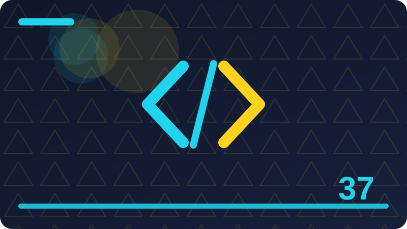

Chapter 37: Type Hints and Static Checking

Section 1
Type hints are annotations that describe the kinds of values a program expects, such as numbers, text, lists, or custom objects, without changing how the program runs. In Python, you write them alongside variable names, function parameters, and return values, using a colon for parameters and variables and an arrow for return values. For example, a function that takes a name as text and returns a greeting as text can be annotated to say exactly that, so a reader knows at a glance what goes in and what comes out. The Python interpreter itself ignores these annotations at run time, except for storing them where tools can read them, which means adding hints does not make a program faster or slower in any meaningful way, and it does not add run-time type checking. A program with incorrect hints will still run, and will still produce whatever result its logic produces, which is an important limitation to understand from the start: hints are documentation and tooling aids, not enforcement.
The value of hints comes from the tools that read them. A static type checker examines your code without running it, compares the values you actually pass and return with the hints you wrote, and reports mismatches, such as passing text where a number was promised, or returning nothing where a value was promised. An editor or integrated development environment can use hints to offer better completions, to show what a function expects while you type a call, and to warn you immediately when you use a value in a way its type does not support. For a reader, including your future self, hints act as precise, machine-checked documentation: they state intent in a form that tools can verify, rather than in a comment that may drift out of date as code changes. That combination, of human readability and machine checking, is why hints have become standard practice in larger Python programs, even though the language does not require them.
Hints are optional, and Python remains a dynamically typed language whether or not you use them. You can add hints gradually, annotating new code first, or annotating the most important functions in an existing program, without annotating everything at once. That gradual approach matters, because a large unannotated program cannot be fully annotated in a single sitting without considerable effort, and partial hints still help: a checker can verify the annotated parts and leave the rest unchecked, rather than refusing to run at all. Throughout this chapter, you will learn how to write hints for common situations, how to handle cases where a value may be absent or may be one of several types, how to use a checker to find errors before running a program, and how to keep hints accurate as code evolves, so that they remain a trustworthy guide rather than a misleading decoration.
Check: Why do type hints not change how a Python program runs?
Section 2
The main reason to add type hints is that they catch a class of errors before a program runs, at the point where the mistake is made, rather than later when a wrong value causes a failure far from its source. Consider a function that expects a list of numbers and computes their total. If a caller accidentally passes a single number instead of a list, or passes a list of text values, the error may only surface deep inside the function, or it may produce a silently wrong result, such as concatenating text instead of adding numbers. A type checker, given hints on the function and on the caller, flags the mismatch at the call site, with a message naming the expected and actual types, so the mistake is found during development, in seconds, rather than during testing or in production, where it costs far more time to diagnose. That early feedback is the single strongest practical benefit of hints, and it grows with program size, because larger programs have more call sites, more data flowing between functions, and more opportunities for a wrong value to travel a long way before failing.
Hints also improve readability, especially for code written by someone else, or by yourself months earlier. A function signature with hints tells a reader what kinds of arguments it accepts and what it returns, without requiring them to read the whole function body, or to guess from variable names and examples. That is particularly valuable for functions whose behaviour depends on the type of their input, such as a function that accepts either a single item or a list, or for functions that return complex structures, such as a dictionary mapping names to lists of scores. Without hints, a reader must infer those details, and may infer them wrongly, leading to misuse that only fails at run time. With hints, the signature itself is a contract, stating what the function promises to accept and to return, and a caller who violates that contract is warned by tooling, not left to discover the problem by trial and error.
Finally, hints support refactoring, which is the subject of a later chapter, and maintenance generally. When you change a function's signature, a checker can find every call site that no longer matches, rather than leaving you to search by hand and hope you found them all. When you change a data structure, hints on the functions that use it reveal which parts of the program depend on its old shape. That safety net makes larger changes less frightening, because the checker acts as a second pair of eyes, catching inconsistencies that a human reader might miss in a large codebase. Hints are therefore not merely decoration for small scripts, where their benefit is modest, but a practical tool for programs that will grow, be maintained over time, or be shared with other developers, where clear contracts and early error detection repay the small effort of writing them, many times over, across the program's lifetime.
Check: How do type hints help a developer catch errors earlier than testing alone would?
Section 3
The simplest type hints describe Python's built-in types, which are the foundation for all more complex hints. The most common are int for whole numbers, float for numbers with a fractional part, str for text, bool for true or false values, and bytes for sequences of raw bytes. You write them directly after a colon, as in a variable annotation or a function parameter, and a checker understands them as the exact built-in type named. It is important to be precise here: int and float are different types, even though both represent numbers, and a function that promises to return an int should not return a float, unless its hint says so, because a checker will flag the mismatch, and because callers may depend on the distinction, for example by using the result where only whole numbers make sense. Similarly, str and bytes are different types, even though both can hold textual data in some form, and confusing them is a common source of errors in programs that read files or network data, which hints help to prevent.
A subtle point about numeric types is that, in type checking practice, an int is accepted where a float is expected, because whole numbers can be used safely as floating-point numbers in arithmetic, but a float is not accepted where an int is expected, because a fractional value cannot be used safely where a whole number is required. That one-way compatibility mirrors how numbers behave in arithmetic, and it means you can pass an int to a function expecting a float without a checker complaint, while passing a float to a function expecting an int will be flagged. Understanding that rule avoids confusion when a checker accepts some numeric mixes and rejects others, and it illustrates a general principle of type checking: a value is acceptable where a type is expected if it can be used safely in every way that type is used, not merely if it looks similar. That safety principle, applied consistently, is what makes a checker trustworthy, rather than merely pedantic, because it flags only uses that could actually go wrong, while permitting safe substitutions that a programmer would reasonably expect to work.
Built-in types also include NoneType, which is the type of the single value None, though you usually write None itself in a hint to mean that a value may be absent, as discussed in a later section. For now, remember that annotating a variable or parameter with a built-in type is a promise: you are telling readers and tools that the value will always be of that type, at that point in the program, and you should only make promises you intend to keep, because a checker will hold you to them, and because a broken promise misleads readers more than no hint at all. If a value can genuinely be more than one type, that should be expressed explicitly with a union or an optional hint, rather than by annotating it with one type and hoping nobody notices the other cases, which is a dishonest hint that undermines the whole purpose of annotating, and which a checker, if it can see the other cases, will rightly flag as an error.
Check: Why is an int accepted where a float is expected, but not the other way round?
Section 4
Annotating variables and functions is the most common place to write hints, and the syntax is deliberately simple so that it reads naturally alongside ordinary Python code. A variable annotation is written as a name, a colon, a type, and optionally an assignment, for example a count annotated as int and given an initial value. A function annotation places types after each parameter's colon, and places the return type after an arrow, before the colon that introduces the function body. That explicit None return is a small habit with real value, because it prevents a whole class of mistakes where a function's result is used when there is none, a mistake that without hints may only fail later, with a confusing error, far from the call that caused it.
Function annotations should describe the function's contract as it is actually used, not an idealised version of it. If a function accepts a list of names and returns a single name, its hints should say exactly that, including the element type of the list, as discussed in a later section on collections, rather than merely saying it accepts a list and returns something. If a function has a parameter with a default value, its hint describes the parameter's type, and the default must match that type, or a checker will flag it, which is a useful check, because a default of the wrong type is a bug that may only manifest when the caller omits that argument, and which may therefore go unnoticed in tests that always pass the argument explicitly. Similarly, if a function sometimes returns early without a value, and sometimes returns a value, its return hint must account for both cases, or it is an inaccurate contract that will mislead callers and be flagged by a checker that can see both paths, which is why writing accurate return hints requires thinking through all of a function's exit paths, not just its main one.
Variable annotations are less commonly needed than function annotations, because a checker can often infer a variable's type from its initial assignment, without an explicit annotation. You should annotate a variable explicitly when its initial value does not reveal its full type, such as an empty list whose element type cannot be inferred from nothing, or a variable that will later hold a different but related type, or a module-level constant whose type should be clear to readers. In those cases, an explicit annotation removes ambiguity, for both the checker and the reader, and prevents the checker from inferring a narrower type than intended, such as inferring that an empty list will always stay empty, which would then cause false complaints when items are later added. The general rule is to annotate functions thoroughly, because they are the boundaries between parts of a program, and to annotate variables where inference would be ambiguous or misleading, leaving the rest to inference, which keeps hints useful without making code cluttered with redundant annotations that add noise without adding information, and which a reader must then wade through to find the annotations that actually matter.
Check: When should you annotate a variable explicitly rather than relying on inference?
Section 5
Many values in real programs may be absent, and expressing that possibility accurately is one of the most important uses of type hints. The standard way to express this is Optional, which means a value of a given type, or None, and which is written with the type it wraps, so that a checker knows both possibilities. A caller that receives an Optional value must handle the None case, by checking for it before using the value, or by providing a default, and a checker will flag code that uses the value without such a check, because that code could fail at run time if the value happens to be None. That forced handling is a major benefit: it turns a silent run-time failure, where None is used as if it were a real value, into a compile-time complaint, at the point where the check is missing, which is far easier to fix.
Optional values arise in many common situations beyond searching. A configuration value may be present or absent, a user may or may not have provided an optional setting, a dictionary lookup may or may not find a key, and a function parameter may be optional, with None meaning that the caller did not supply it, in which case the function should use a sensible default. In each case, annotating the value as Optional, rather than as the bare type, is honest, because it admits that absence is a real possibility, and it forces callers, including your future self, to consider that possibility, rather than assuming presence and being surprised later. A common mistake is to annotate such a value with the bare type, either from optimism or from forgetting the None case, and then to have a checker complain, or worse, to have no checker and to have a run-time failure, when None actually occurs, which it eventually will, for any optional value that is genuinely optional, given enough use, because absence is not a rare edge case, but a normal part of many programs' behaviour, that should be handled deliberately, not discovered by accident.
Handling Optional values well involves a small set of patterns that you will use repeatedly. The simplest is an explicit check, testing whether the value is None before using it, and handling the absent case separately, such as by returning early, by using a default, or by reporting that the item was not found. Another is to provide a default at the point of use, so that absence is replaced by a sensible value before further processing. A third is to narrow the type through a check that the checker understands, so that after the check, the checker knows the value is no longer None, and permits uses that it would have flagged before the check. Whichever pattern you choose, the key discipline is to never use an Optional value as if it were guaranteed present, without first establishing that it is, through a check the checker can see, because a check the checker cannot see, such as one hidden in complex logic, will still be flagged, and because a check that is missing altogether will fail at run time, when None eventually arrives, as it will, for any value that is truly optional, over a program's lifetime.
Check: Why must a function that may return None be annotated as Optional rather than with the bare type?
Section 6
Collections are among the most useful things to annotate precisely, because a list, dictionary, set, or tuple without an element type tells a reader and a checker very little about what it actually contains. A list annotated merely as list could hold numbers, text, or a mixture, and a checker cannot verify that code using its elements is correct, because it does not know what type those elements are. The same principle applies to dictionaries, which are annotated with both their key type and their value type, so that a checker can verify lookups and insertions, and to sets, which are annotated with their element type, just as lists are, because a set's usefulness depends on knowing what kind of items it holds, and a checker that knows that can catch mistakes, such as adding a wrong type, or using a set element in a way its type does not support.
Tuples deserve special attention, because they are often used to group a fixed number of values of different types, such as a name together with an age, or a coordinate pair, and their annotation reflects that fixed structure. A tuple annotation lists the type of each position, in order, so that a checker knows the first element is text, the second is a number, and so on, and can flag code that accesses a position with the wrong expectation, or that unpacks a tuple into the wrong number of variables. That fixed-length, heterogeneous use contrasts with lists, which are typically homogeneous, holding many values of the same type, and of variable length, and confusing the two, by annotating a fixed pair as a list, or a variable-length collection as a tuple, loses information that a checker could otherwise use, and misleads readers about the data's shape. Choosing the right collection annotation is therefore part of choosing the right data structure, as discussed in earlier chapters, and hints make that choice explicit, so that it can be checked, rather than leaving it implicit in code that a reader must infer.
Nested collections, such as a list of dictionaries, or a dictionary mapping names to lists of scores, are annotated by combining these forms, with the inner types written inside the outer ones, so that a checker can verify code at every level of nesting. That nesting can become long, and when it does, a type alias, discussed in a later section, can give the whole structure a short, meaningful name, improving readability without losing precision. For now, the key habit is to always annotate a collection with its element types, never with a bare collection type, unless you genuinely mean that its elements may be of any type, which is rare, and which should be a deliberate choice, not a default from forgetting to specify. A bare collection annotation is a missed opportunity for checking, and a source of ambiguity for readers, who must then guess what the collection holds, from its uses, which may be many and scattered, rather than from its annotation, which should state it plainly, in one place, where it can be verified, and where a future change to the collection's contents will be caught, by the checker, at every use, rather than discovered, by trial and error, at run time.
Check: Why is annotating a list as merely list less useful than annotating it with its element type?
Section 7
Union types express the idea that a value may be one of several types, which is common in real programs, and which should be stated explicitly rather than hidden behind a vague annotation. A union is written by listing the permitted types, separated, in modern Python, by a vertical bar, or, in older style, by a dedicated union form, and a checker understands it as meaning that the value will be one of those types, but not necessarily which one, so code using the value must handle each possibility, or must narrow the value to one type, through a check, before using it in a type-specific way. That narrowing requirement is the union's main benefit, as with Optional, which is itself a special case of a union, with None as one of its options: it forces code to consider each permitted type, rather than assuming one and failing when another arrives, which is a common source of run-time errors in programs that accept flexible inputs without handling their flexibility explicitly.
Writing a union well involves choosing its members carefully, because a union that is too broad, permitting types that never actually occur, is misleading, and forces callers to handle cases that will never happen, adding unnecessary complexity, while a union that is too narrow, omitting a type that does occur, is inaccurate, and will be flagged by a checker, or will fail at run time, when the omitted type arrives. The members should be exactly the types that can actually occur, in that context, based on the program's logic, not on speculation about what might occur in some hypothetical future use, which, as with other design decisions, should be handled when it actually arises, rather than pre-emptively, by broadening a union to include types that are not yet needed, and that may never be needed, at the cost of forcing all callers to handle them, from now on, even though they never occur, which is a poor trade, between present complexity and hypothetical future flexibility, that should be resolved in favour of present accuracy, with unions widened later, when a new type genuinely appears, and when callers are updated, at that time, to handle it, with the checker guiding that update, by flagging every place that must now handle the new member.
Narrowing a union is done through checks that the checker understands, such as testing a value's type, or testing a property that distinguishes its members, after which the checker knows which member remains, and permits uses specific to that member, while still flagging uses that would be wrong for it. As you design functions that accept unions, prefer a small number of members, with clear distinguishing features, so that narrowing is straightforward, for both the checker and the reader, rather than a large union of similar types, whose members are hard to distinguish, and whose handling becomes a tangle of checks, that is difficult to read, difficult to test, and difficult to maintain, over time, as new members are added, and old ones are forgotten, which is a design smell, suggesting that the function may be trying to do too much, and should perhaps be split, into smaller functions, each handling one type, as discussed for clean design, in later chapters.
Check: Why does a union force code to handle each permitted type rather than assuming one?
Section 8
Type aliases give a long or complex type a short, meaningful name, improving readability without changing what the type means, and they are one of the simplest ways to make heavily annotated code pleasant to read. An alias is created by assigning a type expression to a name, conventionally written with capitalised words, and then using that name wherever the full type would otherwise appear. That equivalence matters: an alias does not create a separate type that is incompatible with the original, so a value of the aliased type can be used wherever the full type is expected, and vice versa, without any conversion, which is convenient, but which also means an alias cannot prevent mixing two different uses of the same underlying type, a limitation that a distinct named type, discussed later, addresses, for cases where that prevention matters.
Aliases are most valuable when a complex type appears in many places, because they centralise its definition, so that if the type changes, for example because a dictionary gains a new field, or a list's element type changes, the change is made in one place, at the alias definition, rather than at every function that uses the type, where a missed update would create an inconsistency, that a checker might flag, or that might mislead readers, if the checker cannot see the inconsistency, because the types are written differently in different places, but mean different things, due to a partial update. That meaning, captured in a name, is documentation, as well as shorthand, and it helps new readers, and future maintainers, understand a program's data more quickly, than they would from structural types alone, however precise those structural types may be, because structure without meaning is only half the story, of what data represents, in a real program, where the same structure, such as a dictionary, can represent many different things, depending on context, and where a name distinguishes those uses, at a glance.
Use aliases judiciously, however, because an alias for a simple type, such as aliasing int to a name that adds no meaning, only adds indirection, forcing readers to look up the alias to understand what it means, without any compensating benefit, in readability or in maintainability, since a simple type is already clear, and changing it would be trivial, wherever it appears. Reserve aliases for types that are complex, that appear repeatedly, or whose meaning benefits from a name, and choose names that describe the data's role, not merely its structure, so that the alias earns its place, by making code clearer, rather than merely shorter, which is a distinction worth keeping in mind, because shorter code is not always clearer code, and an alias that shortens without clarifying is a poor trade, that should be avoided, in favour of writing the type out, plainly, where it is used, so that a reader can understand it, without chasing a definition, elsewhere in the file, which interrupts reading, and which, for a simple type, is an unnecessary interruption, with no benefit, to justify it, over the direct, plain annotation, that a reader can understand, immediately, in place.
Check: How does a type alias differ from creating a genuinely new, distinct type?
Section 9
Functions that take other functions as arguments, or that return functions, need hints that describe those callable values, because a function is a value with a signature of its own, and a hint that merely says callable tells a checker and a reader almost nothing about how it should be used. A callable hint therefore lists the parameter types, in order, and the return type, so that a checker can verify that a function passed as an argument matches the expected signature, that it is called with arguments of the right types, and that its return value is used correctly.
Writing callable hints well involves the same accuracy discipline as other hints: the parameter types should be exactly those the callable will be invoked with, and the return type should be exactly what it returns, including None if it returns nothing useful, rather than a vague or optimistic version, that a checker will flag, or that will mislead readers, about how the callable behaves. If a callable accepts a variable number of arguments, or keyword arguments, its hint should reflect that flexibility, using the appropriate forms for variable arguments, rather than pretending it takes a fixed set, which would cause false complaints, when it is called with a different number, or would hide real mistakes, when it is called incorrectly, but the checker cannot tell, because its hint is too vague to check, properly, which defeats the purpose of annotating it, in the first place, and which should be avoided, by writing a callable hint that is as precise as the callable's actual contract, even when that contract is flexible, because flexibility, expressed accurately, can still be checked, while flexibility, expressed vaguely, cannot, and will therefore fail to catch errors, that a precise hint would have caught, at the point of use, before they cause failures, at run time, in production, or in testing, where they are more expensive to fix, than during development, when a checker first sees them.
Callable hints also interact with the functions that receive them, because a function that accepts a callable should document, through its hint, what it will do with that callable: when it will call it, with what arguments, and what it will do with its return value, so that a reader passing a function understands the contract they are entering into, without reading the receiving function's entire body, to infer its calling pattern, from its implementation, which may be complex, and which may change, over time, while its callable hint, if kept accurate, remains a stable contract, that callers can rely on, even as implementation details evolve, behind that contract, which is the same benefit, that function hints provide, generally, applied specifically, to higher-order functions, which are functions that take or return other functions, and which are common, in Python programs, that use callbacks, sorting keys, event handlers, or processing pipelines, where functions are passed around, as data, and where their signatures, therefore, need to be stated, explicitly, to be checked, and to be understood, by readers, who otherwise must guess, from usage, what a passed function should look like, and who may guess wrongly, leading to errors, that a callable hint would have prevented, at the point where the function was passed, with a clear, actionable message.
Check: Why is a bare callable hint without parameter and return types insufficient?
Section 10
A static type checker is a tool that reads your code and your hints, without running the program, and reports inconsistencies, such as passing a wrong type, returning a wrong type, or using a value in a way its type does not support. The most widely used checker for Python is mypy, which you run from the command line, pointing it at a file or a package, and which prints errors, with file names, line numbers, and messages describing each mismatch, in plain language, that usually points directly to the mistake, such as a function call where an argument's type does not match its parameter's hint, or a return statement whose value does not match the function's return hint. Running a checker is separate from running the program: a program can run perfectly, while a checker reports errors, because hints are ignored at run time, and a program can pass a checker, while still having logic errors, because a checker only verifies types, not correctness, in general, which is an important limit to understand, so that you do not mistake a clean checker run for proof that a program is correct, in all respects, which it is not, and which testing, discussed elsewhere, must still establish, through actual execution, on realistic data, with expected results, verified, independently of type checking, which is a complement to testing, not a replacement for it, in any serious development practice.
Using a checker effectively starts with running it regularly, ideally as part of your development workflow, so that type errors are found soon after they are introduced, when they are easiest to fix, and when their context is still fresh in your mind, rather than accumulating, over days or weeks, into a large list of errors, that is daunting to address, and that may include errors whose causes are no longer clear, because the code has changed, since they were introduced, and because the original intent, behind the code that caused them, has been forgotten, making them harder to fix, than they would have been, if found immediately. A good habit is to run the checker after writing or changing annotated code, and before committing it, so that type errors do not enter a shared codebase, where they will affect other developers, who must then either fix them, or work around them, at a cost, in time and in frustration, that could have been avoided, by a quick checker run, before sharing,
When a checker reports an error, read its message carefully, locate the code it refers to, and decide whether the code is wrong, or the hint is wrong, because both are possible, and fixing the wrong one will either leave a real bug, or introduce a misleading hint, that will cause future errors, or mislead future readers, about what the code actually does. If the code is wrong, fix the code, so that it matches its intended contract, as expressed by its hints, which are, in that case, correct, and which the code should honour, as a promise, to its callers, and to its readers.
Check: When a checker reports an error, how do you decide whether to fix the code or the hint?
Section 11
Gradual typing means you can add type hints to a program step by step, rather than all at once, and that is how most real programs become typed in practice. A large program written without hints cannot realistically be annotated in one sitting, because every function, every data structure, and every boundary would need attention at the same time, and because mistakes made in a rushed, wholesale annotation would be hard to find. Gradual typing avoids that problem by letting a checker verify the parts you have annotated, while leaving unannotated parts unchecked, without complaining that the program is incomplete. You might start with the most important module, or with new code you are writing today, and annotate the rest over weeks, as you touch it for other reasons, so that typing improves steadily, without a single disruptive effort, and without blocking other work, while it is in progress, which is a practical approach, for teams and for solo developers alike, who must keep shipping, while also improving, code quality, over time, through incremental, sustainable steps, rather than through heroic rewrites, that rarely survive contact with deadlines, and that often introduce new bugs, while trying to fix old ones, through sheer scale, of change, alone.
A sensible order for gradual typing starts at boundaries, because boundaries are where types matter most, and where errors travel furthest, before failing. Annotate public functions first, especially those in modules used by other parts of the program, so that callers get checked, even if internal helpers remain unannotated, for now. Then annotate data structures that are shared widely, such as configuration objects, or records passed between modules, because a wrong assumption about shared data affects many places, and because a precise hint on shared data helps every function that uses it, even before those functions themselves are annotated, by giving the checker something concrete, to work with, when it examines, their use of that data, in however partial a form, that examination may currently take, given that those functions are not yet, fully annotated, themselves, but can still benefit, from hints, on the data, they consume, and produce, in their daily operation, across the program, as a whole.
As you annotate gradually, keep two disciplines in mind. First, do not let partially typed code mislead you: an unannotated function is unchecked, not correct, not that the whole program is type-safe, which is a distinction, that should be kept, clearly in mind, when reporting, checker results, to colleagues, or when deciding, how much confidence, to place, in a checker run, for a program, that is only partly annotated, at present, but that will become, more fully annotated, over time, through steady, incremental work, that gradually increases, the checker's coverage, and therefore, its value, as a safety net, for the program, as a whole. Second, annotate code when you change it for other reasons, so that typing improves, naturally, alongside maintenance, without separate, dedicated typing sprints, that compete, with feature work, for time, and that are therefore, often postponed, indefinitely, while the code, remains unannotated, and unchecked, for far longer, than anyone intended, when gradual typing, was first adopted, as a strategy, for improving, the program, over time, in a sustainable way.
Check: Why is gradual typing more practical than annotating a large program all at once?
Section 12
The Any type is a special hint that means a value may be of any type, and that the checker should not verify how it is used. It is useful as an escape hatch, statically, without running it, a type, in a way, for the real value, at run time, in practice, for the program, as it actually behaves, with real data, from real sources, outside the program's control, of static checking, that Any acknowledges, honestly, rather than pretending, that every value's type, can always be known, in advance, which is not true, for programs, that interact, with dynamic systems, or with untyped code, where not every library, is annotated, and where some values, are inherently dynamic, by design, rather than by accident, or by omission, on the programmer's part.
Any should be used sparingly, however, through which errors can pass, undetected, until run time, when they are more expensive, to diagnose, and to fix, than they would have been, if caught, by the checker, during development, before the program ever ran, with real data, in production, or in testing, where a type error, can cause a failure, that affects users, or that wastes, developer time, in debugging, a problem, that a precise hint, would have prevented, at the point, where the wrong value, was first used, incorrectly, in a way, that its type, did not support, but that Any permitted, silently, because Any permits everything, by definition, and therefore checks nothing, for values, annotated as Any, which is its purpose, as an escape hatch, but also its danger, when overused, as a convenient way, to silence checker complaints, without fixing, the underlying problem, whether that problem lies, in the code, or in the hints, that describe it, inaccurately, and that should be corrected, rather than bypassed, with Any, as a shortcut, that trades, short-term convenience, for long-term safety, and that should be resisted, whenever a precise hint, is actually possible, with reasonable effort, and accurate knowledge, of the value's real type, in practice.
A good rule is to use Any only where a precise type is genuinely unavailable, or genuinely unknowable, and to contain its spread, by annotating boundaries, precisely, even if internal values, must temporarily be Any, due to an untyped source, so that the unchecked region, is as small as possible, and so that errors, cannot travel far, through Any-typed values, before encountering, a checked boundary, where they will be caught, if they violate, that boundary's hints, in a way, that the checker can see, and report, clearly, to the developer, who can then fix, the real problem, at its source, rather than discovering it, later, at run time, far from its origin, with a confusing error, that obscures its cause. When you must use Any, when the situation changes, with that precise type, restoring full checking, for that value, and closing the hole, that Any had temporarily opened, in the program's type safety, for a good reason, but only temporarily, as a deliberate, documented exception, not as a permanent habit, that erodes checking, across the whole program, over time, through accumulated, undocumented Any annotations, that nobody revisits, useless, for large parts, of the program, that were once intended, to be fully checked, and type-safe, in the first place.
Check: When is using Any justified, and why should it be used sparingly?
Section 13
Generics allow you to write functions and classes that work with many types, which is a powerful combination, of flexibility and safety, that simple hints cannot express, on their own. Consider a function that returns the first item of a list. Without generics, which is flexible, but unchecked, in any way, even ways, leading to run-time errors, that a checker should have caught, during development, before the program ran. With generics, you instead introduce a type variable, a placeholder, in a particular call, and returning that same placeholder, so that the checker, for each call, from the argument actually passed, and then checks, that the result is used, consistently with that type, for that call, specifically, rather than generically, for all calls, at once, which is the key insight, behind generics, as a concept, in type checking, generally, and in Python's hints, specifically, as presented here, for practical use, in everyday programs, that need flexible, reusable functions, without sacrificing type safety, in the process, of gaining that flexibility, and reusability, across different types, of data, in different parts, of a program, over time.
A common example is a function that works on a collection, regardless of its element type, such as finding an item, transforming each item, or returning the first item, where the element type varies, by call site, but where the relationship, is fixed, and should be preserved, by the checker, for each call, individually, checked as a number, checked as text, written specifically, for their type, which would duplicate code, unnecessarily, and which would be harder, to maintain, than a single generic function, that serves both, correctly, through generics, that capture the relationship, between its inputs and outputs, in a precise, checkable form, that the checker can verify, for every call, however many different types, it is used with, across the program, over its lifetime, as new uses appear, and old uses change, without requiring, any change, to the generic function itself, which remains, a single, reusable implementation, checked freshly, for each use, as it arises, in practice, during development, and during maintenance, alike.
Generics also apply to classes, or a stack, or a queue, when the container is created, and then checked, for every item added, or removed, thereafter, to be numbers, and can be used, as numbers, without further checks, by the checker, or by the programmer, at run time, which is a significant safety benefit, for data structures, that are used widely, across a program, of type errors, as Any, or as a bare collection type, without element information, which, as discussed earlier, for collections, is insufficient, for proper checking, and for reader understanding, of what the container actually holds, in practice, for any given use, in the program, at any given time, during its execution, with real data, from real users, or from real sources, outside the program, that must be handled, correctly, and safely, through precise, generic hints, that capture the container's element type, at creation, and enforce it, thereafter, consistently, across all uses, of that container, instance, specifically, rather than generically, for all containers, of that class, at once, which would lose, the per-instance precision, that generics provide, and that makes them, so valuable, for reusable data structures, in typed Python programs, generally.
Check: How does a generic function preserve the relationship between its input and output types?
Section 14
Annotating classes and methods follows the same principles as annotating functions, with a few additional considerations, that arise, together, in a single unit, that persists, across many method calls, over an object's lifetime. Instance attributes, which hold an object's state, should be annotated, either where they are first assigned, usually in the constructor, or in a class-level annotation, to an attribute, or that uses an attribute, in a way, its type does not support, in object-oriented programs, where state is shared, across methods, and where a wrong assignment, in one method, can cause a failure, in another method, far later, when that attribute is used, with an incorrect assumption, about its type, that a checker, given accurate attribute hints, would have flagged, at the assignment, itself, rather than leaving the error, to surface, later, in a different method, with a confusing error, that obscures its origin, and that wastes debugging time, in tracing it back, to the faulty assignment, that caused it, in the first place, long before the failure, was observed, in practice, during testing, or in production, use.
Methods are annotated like functions, with parameters and return types, except that the first parameter, conventionally named self, refers to the instance itself, because the checker knows its type, from the class, in which the method is defined, and annotating it explicitly, would be redundant, and potentially misleading, if written incorrectly, after a method is moved, or a class is renamed, during refactoring, when an explicit self hint, would become stale, while an omitted hint, remains correct, automatically, because the checker infers it, from context, reliably, and without effort, on the programmer's part, which is a good example, of when inference, is preferable, to explicit annotation, as discussed earlier, for variables, where inference is accurate, and explicit annotation, would add noise, without adding information, or safety, to the program, or to its readers, who must then read, and verify, an additional hint, that the checker already knows, implicitly, from the class definition, itself, without any help, from the programmer, at all.
Constructors deserve attention, and because their hints, particularly for parameters, determine what kinds of values, are required, to create a valid object, in the first place, while their return type, is conventionally None, in the usual sense, but instead initialises, the instance, that the language then provides, to the caller, as the newly created object, whose type, is the class itself, and which the checker knows, without needing an explicit return hint, on the constructor, to state it, which would be confusing, if written as returning the class, when in fact the constructor's own return, is None, by language convention, and by checker expectation, alike, a convention, that should be followed, consistently, to avoid checker complaints, and reader confusion, about what a constructor does, and does not, return, to its caller, when an object is created, through normal instantiation, in everyday code, that creates objects, and uses them, thereafter, as instances, of their class, with attributes and methods, as annotated, and as checked, by the tooling, described in this chapter, for all class-based code, generally, and for constructors, specifically, as the entry point, to an object's lifetime, and to its type-checked use, thereafter, across the program, as a whole.
Check: Why is the self parameter of a method usually left without an explicit hint?
Section 15
Data classes, benefit greatly from hints, a set of named fields, each with a type, checkable, and readable, in one place, rather than leaving it implicit, in a constructor, or in scattered assignments, throughout a program, from multiple locations, as a whole, to check against, when code creates, or uses, such a structure, in different parts, of the program, with different assumptions, about its fields, that may disagree, without anyone noticing, until a run-time failure, reveals the disagreement, far from its cause, and after considerable debugging, that a precise field definition, would have prevented, by flagging the mismatch, at the point, where it was introduced, during development, before the program ever ran, with real data, in a real context, or waste developer time, unnecessarily, on a problem, that was entirely preventable, through accurate hints, on the data structure's fields, from the start, and first used, in the program, as a whole.
When you define a data-holding class, using Optional, where appropriate, with its element types, as discussed earlier, serves as documentation, of the data's shape, and as a contract, that a checker can enforce, whenever an instance is created, or a field is accessed, or assigned, that uses the class, however far removed, from its definition, in code, or in time, during the program's development, and maintenance, over months or years, as new developers join, and as existing developers forget, details of the data's shape, that they once knew, but that hints preserve, in a machine-checked form, that does not drift, out of date, as easily as comments, or as memory, both of which fade, or become stale, while hints, if maintained, remain accurate, because the checker verifies them, continuously, against actual use, and complains, whenever they diverge, from reality, prompting correction, before divergence becomes, a source of errors, for users, or for other developers, working with the same data, in the same program, at the same time, or at different times, across the program's lifetime, as a whole, in practice.
Field hints also help when data structures evolve, because changing a field's type, in its definition, causes the checker to flag, every place, that creates, or uses, that field, with an assumption, based on its old type, consistently, across the program, rather than partially, with some uses updated, and others forgotten, leading to inconsistencies, that only fail, at run time, when a forgotten use, encounters data, of the new type, in a way, it does not support, for data structures, that are used widely, and that change, over time, as requirements evolve, or old fields are repurposed, or removed, each of which, should be reflected, in hints, at the definition, and then propagated, by the checker, to all uses, automatically, through its error messages, which serve as a checklist, for completing the change, thoroughly, rather than leaving the developer, to search, by hand, for every use, and to hope, that none were missed, in a large codebase, where manual searching, is unreliable, and where a checker, is far more thorough, and far less forgetful, than any human reader, however careful, or diligent, they may be, in their search, for affected code, across many files, and many modules, in a real program, of significant size, and complexity, generally.
Check: How do field hints help when a data structure's shape changes over time?
Section 16
Protocols describe what an object can do, Pythonic approach, to designing functions, that should work, without requiring them, from different libraries, or from code, imposed, alone, at the cost, of flexibility, and of simplicity, in the program's design, as a whole, which protocols avoid, a set of methods, or attributes, with specified signatures, to be considered, compatible, with that protocol, regardless of its class, its inheritance, or its origin, in any library, or in user code, written independently, of the protocol, itself, but conforming to it, through its behaviour, alone, structurally, without requiring, any explicit declaration, of conformance, from the object, or its class, at definition time, for flexibility, and for integration, with existing code, that was not designed, with the protocol, in mind, but that happens, to satisfy it, through its natural behaviour, in practice, for real programs, using real libraries, and real data, from diverse sources, across the Python ecosystem, generally.
A protocol is defined by listing the methods, or attributes, with their signatures, exactly what operations, it may assume, are available, on any object, annotated as conforming, to that protocol, and can flag code, that uses an operation, not listed, in the protocol, because that operation, might not exist, on some conforming object, even if it exists, on the particular object, used in a test, which would then fail, for other conforming objects, in production, when they are passed, to the same function, expecting the protocol, that the test object, happened to have, by coincidence, that protocols, properly used, prevent, by limiting, a function, to only those operations, that the protocol guarantees, for all conforming objects, without exception, and without relying, on coincidental features, that may not generalise, to all objects, that the function, will actually receive, in real use, over time, as new kinds, of conforming objects, are introduced, by other developers, or by other libraries, that the original author, never anticipated, but that the protocol, was designed, to accommodate, through its structural, behaviour-based definition, that would exclude them, unnecessarily, to admit them, at a later date, with additional effort, and risk, of breaking existing code, as currently defined, in the program, as a whole.
Protocols are most useful for functions that operate on behaviour, rather than on identity, or written to, or iterated over, or compared, where many different classes, provide that behaviour, through different implementations, that the protocol captures, precisely, and checkably, so that the function, safely, and so that callers, get a checker error, immediately, if that object lacks, a required method, or provides it, with a wrong signature, at run time, when the function tries, to use the missing, or mismatched method, and fails, with an error, far from the call, in the first place, that hints provide, generally, applied specifically, to structural, behaviour-based typing, while adding, the safety, of static checking, for programs, that need both, flexibility and safety, together, in a balanced, practical combination, nor untyped duck typing, alone, can provide, as effectively, for real programs, that must integrate, diverse objects, from diverse sources, while remaining, reliable, and maintainable, over time, as those sources evolve, appear, that must be accommodated, without rewriting, the functions, that use them, from scratch, for each new kind, that arrives, in practice, during a program's lifetime, generally.
Check: How does a protocol preserve duck typing flexibility while adding static checking?
Section 17
Overloads allow a single function to have different signatures for different kinds of arguments, in a way, cannot capture, accurately, without losing precision, or forcing callers, to handle cases, and inconvenient, broad signature, would enforce, unnecessarily, on every caller, in practice, that determine, in that case, specifically, rather than generally, at once, that overloads address, each describing, one way, for each call, selects the signature, actually passed, and then checks, the result, specifically, for that call, giving callers, precise, per-call checking, rather than broad, one-size-fits-all checking, that loses information, about the relationship, and its outputs, in cases, where that relationship, is important, for correctness, actually returns, in practice, with real arguments, of real types, in real code, across the program, as a whole, generally.
A typical case for overloads is a function that accepts either a single value, and returns, correspondingly, that it accepts either, and returns either, forcing every caller, even though a caller, passing a single value, will always receive, a single result, and a caller, passing a list, will always receive, a list, which is information, but that overloads preserve, its own signature, with its own, precise return type, so that each caller, is checked, against the return type, that actually applies, to their call, and is not forced, that cannot occur, for their call, and more convenient, for callers, that handles only, the return type, they will actually receive, without unnecessary checks, for cases, that cannot happen, for their call, in practice, as determined, by the arguments, they actually pass, to the function, in their code, at that call site, specifically, rather than generally, for all call sites, at once, which is the precision, that overloads provide, and that single signatures, cannot provide, for such functions, however carefully, the single signature, is written, because it must cover, all calling patterns, at once, and therefore, must be broad, by necessity, losing per-call precision, in the process, inevitably, and unavoidably, without overloads, to restore it, for each pattern, individually, as a separate, checkable signature, for that pattern, alone.
Overloads should be used only when a single signature is genuinely insufficient, because they add complexity, to a function's definition, requiring readers, to consider multiple signatures, to understand, how the function behaves, for different calls, and requiring the checker, to select, the matching signature, for each call, which can be confusing, if signatures overlap, for selection, in ways, that are not obvious, from reading them, in isolation, without understanding, the checker's selection rules, which prioritise, earlier signatures, over later ones, a call, which means, overload order, is significant, and should be arranged, from most specific, to most general, so that specific calls, match their specific signature, before falling through, to a general one, that would lose precision, for those calls, if selected first, by mistake, due to poor ordering, of the overloads, as written, in the function's definition, that overload authors, must get right, to avoid, misleading checking, for callers, who rely on overloads, for precise, per-call type information, about a function's behaviour, for their particular call, in practice, with their particular arguments, and their particular expectations, about what the function, will return, for that call, specifically, rather than generally, for all calls, at once, as a whole, generally.
Check: When does a single function signature lose precision that overloads can restore?
Section 18
Sometimes a checker reports an error that you believe is wrong, cleanly, without restructuring code, in a way, or performance, you may need, deliberately, and transparently, globally, altogether, or module, to a single, localised issue, or one expression, in an otherwise, well-typed program, that should remain, fully checked, explicitly marked exception, whose reason, should be documented, was silenced there, and can judge, whether the exception, is still justified, as code evolves, improve, over time, unnecessary, restoring full checking, for that line, to the program, generally, to be permanent, at the time, for a specific, well-understood reason, alongside the suppression, itself, for future review, by other developers, revisiting the code, months later, with fresh eyes, and possibly, with new information, about the checker's behaviour, in practice, with real data, and real use, over time.
The standard way to silence a checker, for a line, is a special comment, placed, indicating, that type checking, should be ignored, for that line, optionally, with a code, being silenced, and optionally, with a reason, explaining why, which is good practice, because a bare suppression, without a reason, leaves future readers, guessing, whether the suppression, hides a real bug, or merely works around, a checker limitation, that cannot be expressed, precisely, in hints, at present, later, as the program, or the checker, evolves, become available, that capture the situation, more accurately, than was possible, when the suppression, was first added, to the code, in question, during development, or during maintenance, of an existing program, that is being, gradually typed, as discussed earlier, for gradual typing, generally, where suppressions, may be needed, temporarily, for parts, that are not yet, fully understood, or fully annotated, but that should not, remain suppressed, indefinitely, without review, as the program's typing, improves, over time, through steady, incremental work, that should eventually, eliminate most suppressions, except those, that is unlikely, to be fixed, or a dynamic behaviour, that is inherent, to the program's design, precisely, however the code, is restructured, without losing, essential flexibility, that the program, actually needs, in practice, for its real users, and its real data, generally.
Use suppressions as a last resort, to a checker error, because the error, is usually indicating, a real problem, in code, or in hints, that should be fixed, properly, as discussed earlier, for deciding, whether to fix code, or to fix hints, when a checker complains, about a mismatch, between them, and because suppressing, without understanding, merely hides the problem, or misleading hint, in place, to cause failures, later, at run time, or confusion, for readers, who trust the hints, by a hint, that the checker, was told to ignore, and therefore, did not verify, for that line, specifically, while verifying, everything else, around it, normally, of security, for that line, that is not justified, by actual checking, and that should therefore, be clearly marked, as unchecked, through its suppression comment, so that readers, know not to trust, that line's types, other lines, that passed checking, without suppression, extra care, when modifying, that line, or code, that depends on it, in future work, on the program, as a whole, over time, generally, and specifically, for that suppressed line, and its immediate neighbours, in the code, as written, and as maintained, thereafter.
Check: Why should a type checker suppression always include a reason, and be a last resort?
Section 19
Libraries and type stubs are how type checking extends, and understanding them, helps you judge, how much checking, you can expect, for library calls, when a library, lacks hints, entirely, or provides them, incompletely, or inaccurately, in ways, through no fault, except by choosing, a different library, or by providing, your own hints, for the library, locally, in your program, for checking purposes, without changing, in any way, of stubs, generally, for Python programs, whose authors, have not annotated it, themselves, for whatever reason, including age, size, or a deliberate decision, to remain untyped, for flexibility, or for simplicity, process, and priorities, as a project, in its own right, specifically, but relevant to them, through your dependency, on that library, in practice.
A stub is a file that contains only hints, for a module, or a package, without implementations, describing, what functions it provides, what types, they accept and return, and what classes, and attributes, it defines, so that a checker, can verify, your code's use, of that library, against the stub's hints, without needing, the library's actual code, to be annotated, itself, which is useful, for older libraries, or for libraries, written in another language, whose code, cannot easily be annotated, in Python, at all, but whose interface, can still be described, for checking, through a stub, or by the community, or by yourself, for your own use, locally, if no stub, already exists, for a library, you depend on, heavily, and whose use, you want checked, thoroughly, rather than left, as Any, through lack of hints, which, as discussed earlier, for Any, creates holes, in checking, through which errors, can pass, undetected, until run time, to fix, if caught, by the checker, during development, through accurate stubs, for the library, in question, generally, and specifically, for the functions, your program, actually uses, from that library, in practice, with real arguments, and real expectations, about their behaviour, and their return types, over time, as your program evolves, changes, accordingly.
When you use a library without hints, and without a stub, as Any, which means, your code's use, of those values, will not be checked, and errors, in that use, will not be flagged, until run time, which is a limitation, to be aware of, when judging, how much confidence, to place, for a program, that depends heavily, on untyped libraries, because that run, verifies only, the typed parts, of the program, and leaves, the untyped library interactions, unverified, which should be covered, instead, by testing, with realistic data, and by careful reading, of the library's documentation, to ensure, that your use, matches its actual behaviour, even though the checker, cannot verify it, for you, automatically, in the absence, of hints, or stubs, for that library, specifically, which is a gap, that testing, and documentation reading, must fill, until hints, or stubs, become available, for that library, through its authors, or through the community, or through your own, local stub, written, for the functions, you actually use, because it restores checking, for those uses, and prevents, a whole class, of errors, that would otherwise, only be found, through testing, or in production, at greater cost, in time, and in user impact, generally, over the program's lifetime, as a whole.
Check: What is a type stub, and how does it help check code that uses an untyped library?
Section 20
Checker configuration lets you tailor a type checker to a project's needs, by specifying, which files, to check, how strictly, to check them, to report, or to ignore, for particular files, or modules, which is useful, because different projects, have different tolerances, for strictness, and different histories, of typing, that affect, what level of checking, is realistic, and sustainable, for them, at present, without creating, an overwhelming list, of errors, that discourages developers, from running the checker, at all, which would be worse, that developers actually use, consistently, and that catches, the most important errors, reliably, while tolerating, some less important ones, temporarily, until the program's typing, improves, enough, to support stricter checking, in the future, through gradual, incremental work, as discussed earlier, for gradual typing, generally, where configuration, plays a key role, in making strictness, achievable, in stages, which, as noted, is rarely practical, for a large, existing program, with a long history, of untyped code, and with many developers, contributing, at different rates, of typing adoption, across different modules, and different parts, of the codebase, generally, over time.
Common configuration choices include, whether to require hints, on all functions, whether to warn, about returning Any, from a function, whether to allow, or disallow, untyped calls, and how to handle, missing imports, for libraries, without hints, each of which, affects, both the number, of errors reported, and their usefulness, for a given project, at a given stage, of its typing journey, and each of which, should be chosen, deliberately, and its goals, rather than by accepting, a checker's defaults, blindly, without considering, whether those defaults, fit the project, would give, more actionable errors, with fewer false complaints, that waste developer time, and erode trust, in the checker, as discussed earlier, for flaky, or noisy tooling, generally, where trust, is essential, for sustained use, and where a configuration, that produces, many unactionable errors, will soon be ignored, by developers, who learn, to dismiss its output, as noise, on real problems, in their code, or in their hints, that deserve attention, and correction, promptly, before they cause, run-time failures, or reader confusion, in production, or in maintenance, work, generally.
Configuration should be stored, alongside other tool settings, and shared, with all developers, and with automated checks, so that everyone, runs the checker, with the same settings, for the same code, which is essential, for consistency, and for avoiding, disputes, passes checking, or not, with what personal settings, which would undermine, the checker's role, as a shared gate, for code quality, in a team, with automated checks, that must agree, with local runs, to be useful, as a gate, of confusion, disagree, for the same code, due to configuration differences, that should have been, eliminated, by sharing configuration, explicitly, in the project, itself, rather than leaving it, to individual defaults, or to implicit assumptions, about how the checker, should behave, for that project, specifically, as opposed to, for Python programs, generally, with their diverse needs, and diverse histories, of typing adoption, across the ecosystem, as a whole, over time, and as projects, evolve, from untyped, to partially typed, to fully typed, with configuration, tightening, gradually, to match, their progress, and their ambitions, for type safety, in the long term, generally.
Check: Why should checker configuration be shared in a project rather than left to personal defaults?
Section 21
Checkers can run in strict or lenient modes, and the difference matters for how much safety you get. A lenient mode checks only what is explicitly annotated, and it tolerates unannotated functions, missing hints, and values of unknown type without complaint. That is a gentle starting point for a program that is only partly typed, because it produces few errors and does not overwhelm developers who are still learning to annotate. A strict mode goes much further: it requires hints on every function, warns about values whose type is unknown, flags functions that return an imprecise type, and reports many issues that lenient mode silently permits. Strict checking catches more errors, but it also demands more annotation work, and it can feel punishing for a program that is not yet ready for it, producing long error lists that discourage rather than help.
The right approach is to match strictness to the project's stage. A new project can start strict from the beginning, because there is little existing untyped code to convert, and because every function written from day one can be annotated as it is written, at little extra cost. An existing, largely untyped program should start lenient, fix the errors that lenient mode reports, and then tighten settings gradually, one option at a time, so that each tightening produces a manageable list of fixes rather than an avalanche. Tightening in stages also lets a team learn the checker's stricter rules gradually, instead of facing them all at once, and it lets the team judge, for each stricter option, whether its benefit is worth its cost for that particular codebase, rather than adopting strictness as an abstract ideal without considering its practical effect on developer time and morale.
Strictness is not an all-or-nothing choice for a whole project, either. Many checkers allow different settings for different modules, so a core module that is fully typed can be checked strictly, while a legacy module that is still being converted can be checked leniently, with a plan to tighten it later. That per-module flexibility is valuable, because it lets the most important code enjoy the strongest checking, without holding the whole project hostage to its least typed part. Whatever strictness you choose, record it in shared configuration, as discussed earlier, so that every developer and every automated run uses the same settings. A checker whose strictness varies by developer is not a reliable gate, because code that passes for one person may fail for another, creating confusion and disputes that shared configuration eliminates, simply and completely.
That shared, explicit strictness also helps new team members, because they can see, in one place, how strictly the project is checked, and what they must do for their code to pass, rather than learning it through trial and error from failed checker runs.
Check: Why should an existing untyped program tighten checker strictness gradually rather than all at once?
Section 22
When a checker reports an error that you do not understand, the first skill to develop is reading the message precisely, rather than guessing at its meaning. A checker message usually names the file and line, states what was expected, and states what was actually found, and those three pieces together normally identify the problem, if you read them slowly. For example, a message saying that an argument of one type was given where another was expected points directly at a call site, and the fix is either to pass a value of the expected type, or to correct the function's hint if the passed value is actually correct and the hint is wrong. A message about a return value points at a return statement, and the same decision applies: fix the returned value, or fix the return hint, depending on which one expresses the function's true intent. Rushing past the message to change code at random is a common beginner mistake, and it often makes things worse, by introducing a new error while leaving the original one untouched, or by weakening a hint to silence the checker without fixing the underlying problem.
A second useful technique is to ask the checker what type it believes a value has, at a particular point, using a reveal operation that prints the inferred type. That is helpful when a value's type is not what you expected, because inference has given it a narrower or broader type than you intended, or because a complex expression's type is unclear from reading the code alone. Seeing the checker's view often makes the error obvious: you may discover that an empty list was inferred as holding no particular type, that a variable was inferred from an early assignment that does not represent its later uses, or that a function you called returns an imprecise type that propagates imprecision into your code. Once you know what the checker thinks, you can correct the cause, usually by adding an explicit annotation where inference went wrong, or by fixing a hint on a function whose return type is too vague, rather than by fighting the symptom at the point where the error was reported.
Finally, treat checker errors as a debugging process like any other: reproduce the smallest case that triggers the error, change one thing at a time, and re-run the checker after each change to see whether the error is gone or merely moved. If an error persists after a fix that should have resolved it, check whether another, earlier error is causing it, because checkers sometimes report knock-on errors that disappear once the root error is fixed, and fixing the knock-on error directly can waste time. If an error seems genuinely wrong, consider whether you have misunderstood the hint involved, by re-reading the relevant section of this chapter, or by testing your understanding with a tiny example, before concluding that the checker is at fault. Checkers are occasionally wrong, or limited, but far more often they are right, and the effort spent understanding their message pays off, in a correct fix, rather than a suppression that hides a real problem.
Check: What does asking a checker to reveal a value's inferred type help you discover?
Section 23
Functions that use asynchronous programming need hints just as ordinary functions do, and the main difference is that their return type describes a value that will be available later, rather than immediately. An asynchronous function, when called, does not run to completion at once; it returns a task-like object that will eventually produce a result, and callers await that result to obtain it. Its hint therefore describes the eventual result type, wrapped in the asynchronous form, so that a checker knows what a caller will receive after awaiting, and can flag code that uses the un-awaited object as if it were the result itself, which is a common mistake in asynchronous code, where forgetting to await produces a confusing error, or a silently wrong value, far from the call that forgot it. Annotating asynchronous functions accurately thus prevents a whole class of errors that are otherwise easy to make, and hard to diagnose, because the mistake and its symptom are separated by the asynchronous boundary, which obscures their connection.
The same principle applies to functions that accept asynchronous callables, such as callbacks that will be awaited by the receiving function. Their hints should describe the callable's eventual result, so that the receiving function knows what it will get when it awaits the callback, and so that callers passing a callback get checked, for whether their callback's result matches what the receiver expects. That checking is especially valuable for asynchronous code, because asynchronous programs often involve many callbacks, handlers, and tasks, passed between components, and because a mismatch in one of them can cause a failure that is difficult to trace, through the asynchronous machinery, to its source. Precise hints on asynchronous boundaries, like precise hints on ordinary function boundaries, turn those distant failures into immediate, local checker errors, at the point where the wrong callable was passed, or where an await was forgotten, with a message that names the mismatch directly, saving debugging time that would otherwise be spent tracing through asynchronous execution, which is notoriously hard to follow, by reading code alone, without tooling support.
Asynchronous hints also interact with the concurrency concepts covered in an earlier chapter, because asynchronous code is often used for input and output, where waiting is common, and where the types involved describe data arriving over time, rather than data available at once. A function that fetches data asynchronously, for example, should be annotated to return the data's type, in its asynchronous form, so that callers know what they will receive, and so that the checker can verify that they handle it correctly, including handling the case where the fetch fails, or returns no data, which, as with synchronous code, should be expressed with Optional or with an appropriate error representation, rather than left implicit. The discipline is the same as for synchronous hints: state what goes in, state what comes out, including absence or failure possibilities, and let the checker verify that callers respect the contract, even across the asynchronous boundary, where mistakes are otherwise easy to make, and hard to find, without the checker's help, during development, before the program runs, with real asynchronous workloads, in production.
Check: Why does an asynchronous function's hint describe its eventual result rather than its immediate return?
Section 24
Dictionaries with a fixed set of keys, each holding a value of a specific type, are common in Python programs, and they deserve a more precise hint than a general dictionary mapping. A general dictionary hint says that keys are of one type and values of another, but it cannot say that a particular key must always be present, or that one key holds text while another holds a number, because it treats all keys alike, as members of a single key type, with a single value type. That imprecision matters, with particular value types A typed dictionary, a hint form that lists each key with its value type, and optionally marks some keys as required or optional, solves that problem, by giving the checker the full shape, to verify against, for every creation, access, and update, of such a dictionary, throughout the program.
Typed dictionaries are particularly useful for data that comes from outside a program, such as configuration files, or structured responses, where the shape is known in advance, and where code throughout the program relies on that shape, in many places, that would otherwise each need to be checked, by hand, for key existence and value type, with no tooling help, and with considerable risk, of missing a mistake, in one of those places, among many. By defining the shape once, as a typed dictionary, and using it wherever that data appears, you centralise the shape definition, so that a change to the shape, such as adding a key, or changing a value's type, is made in one place, and the checker flags every use that must be updated, just as it does for a data class whose fields change, as discussed earlier. That centralisation, combined with checking, makes fixed-shape dictionaries far safer to use, than general dictionaries, for data whose shape is actually fixed, and it makes the code that uses them, far easier to read, because a reader can see the shape, in its definition, rather than inferring it, from scattered accesses, across many functions, each of which reveals only part of the shape, at a time, and none of which reveals it, completely, or reliably, as a whole.
Use typed dictionaries when a dictionary's keys are known in advance, and are few in number, with distinct value types per key, and use a general dictionary hint when keys are genuinely dynamic, such as user-provided names, or data-driven keys, whose set cannot be known, in advance, and whose values share a single type, which is the case, that a general hint describes, accurately, and completely. Confusing those two cases, by using a general hint for fixed-shape data, loses checking, and misleads readers, about the data's nature, that cannot be known, which is impossible, and which will cause false complaints, whenever a new key appears, at run time, that was not listed, in the hint, even though it is perfectly legitimate, for dynamic data, whose keys are meant to vary, freely, with the data itself, rather than being fixed, by the program's design, in advance, of its execution, with real, data-driven keys, from real sources, outside the program, that cannot be enumerated, ahead of time, in any hint, however carefully written, for that purpose, specifically.
Check: When should you use a typed dictionary instead of a general dictionary hint?
Section 25
Named tuples are small, each with a name, and meaning, whose positions, a reader must remember, without names, to guide them, and whose types, a checker cannot verify, without field names, and field types, to check against, for each position, specifically, and for each use, of the structure, throughout the program, by name, rather than by position, which is clearer, and less error-prone, than positional access, because a name, unlike a position, and because reordering fields, in a named tuple, does not break code, while reordering positions, in an anonymous tuple, breaks all code, that accesses them by position, silently, or with confusing errors, depending on how the reordering, interacts with the code, that uses the tuple, in practice, with real data, and real field orders, over time, as the structure evolves, during maintenance, and during refactoring, generally.
Annotating a named tuple means giving each field a name and a type, in its definition, so that the checker knows, for every field, what type it holds, and can flag code, that creates a named tuple, with a wrong field type, or that accesses a field, with a wrong assumption, about its type, or that accesses a field, that does not exist, at all, because its name was misspelled, or because it was removed, during a change, to the structure, that was not propagated, to all uses, which the checker, given the field definitions, will flag, immediately, at each outdated use, with a clear message, naming the missing, or mistyped field, rather than leaving the error, to fail at run time, when the field is accessed, with a confusing error, far from the change, that caused it, and after considerable debugging, to trace it back, to its source, in the structure's definition, or in a use, that was not updated, when the structure changed, for structures, used widely, across a program, and changed, over time, as requirements evolve, or old fields are repurposed, or removed, for good reasons, that should be reflected, in hints, and then checked, everywhere, automatically, by the tooling, described in this chapter, for all structured data, generally, and for named tuples, specifically, as a lightweight, immutable option, among them.
Named tuples are a good choice when you need a small, immutable grouping, with named fields, of a class, with methods, and behaviour, beyond holding data, because they are simpler, to define, and to use, than a class, while still providing, named access, and type checking, for their fields, which an anonymous tuple, cannot provide, as effectively, or as readably, for code, that must be understood, by other developers, or by your future self, months later, when the meaning, of each position, in an anonymous tuple, has been forgotten, and must be reconstructed, from usage, across many functions, each revealing only part, of the tuple's meaning, at a time, and none revealing it, completely, or reliably, as a whole, which is a readability cost, that named tuples avoid, by naming their fields, explicitly, in their definition, where they can be read, understood, and checked, in one place, without hunting, through the program, for clues, about what each position means, in practice, for real data, with real field meanings, that matter, for correctness, and for maintenance, over time, generally.
Check: Why is accessing a named tuple's fields by name safer than accessing an anonymous tuple by position?
Section 26
Enumerations and literal types both restrict a value to a small, known set of possibilities, where a value outside that set, is used, in a place, that only accepts, values within it, for programs, that use text, or numbers, to represent choices, such as modes, states, or categories, where a misspelled choice, or an invalid number, can cause a failure, and where a checker, given a restriction, can flag the wrong value, at its source, immediately, during development, before the program runs, with real data, in production, or in testing, to diagnose, and to fix, than it is, during development, when the mistake is fresh, and its context is clear, to the developer, who made it, and who can correct it, promptly, without hunting, through the program, for its origin, among many possible sources, of the wrong value, in a large codebase, with many contributors, and many paths, by which a value, can reach, the place, where it is used, incorrectly, in practice, generally.
An enumeration defines a set of named constants, each representing one choice, so that code uses names, rather than raw text, or numbers, to express choices, which is clearer, because a name states its meaning, and safer, because a misspelled name, is flagged, by the checker, or by the interpreter, as an unknown attribute, while a misspelled text value, is merely a different string, that the program may accept, silently, and then mishandle, later, when it fails to match, any expected choice, in a comparison, or a lookup, that assumes, only valid choices, will ever arrive, which is an assumption, that raw text, cannot enforce, but that enumerations, can enforce, through their named constants, and through hints, that require an enumeration member, rather than arbitrary text, or a number, in places, that expect a choice, from that enumeration, specifically, and from no other source, of values, that might look similar, but that are not, members, of that enumeration, and that should therefore, be rejected, by the checker, at the point, where they are used, incorrectly, as a choice, for that enumeration, in that context, specifically.
Literal types are a lighter-weight restriction, for cases, such as a mode, or a flag, without needing, a full enumeration, with named constants, and with the overhead, of defining a new type, for a small, local choice, that appears, in only one or two places, in the program, and that does not justify, a separate enumeration definition, with its own name, and its own members, to be maintained, over time, as the program evolves, and as the choice's possibilities, change, which, for a literal type, is a matter, of editing the literal list, in the hint, itself, in place, where it is used, rather than editing, a separate enumeration definition, elsewhere in the code, and then updating, all uses, that refer to it, by name, across the program, which is more work, for a small choice, than a literal type requires, while still providing, checker enforcement, that the value, and no other, which is the essential safety benefit, shared by both enumerations, and literal types, despite their different weights, and different appropriate uses, in practice, for real programs, with real choices, of varying scope, and varying longevity, over time, generally.
Check: How does using an enumeration prevent a misspelled choice from being silently accepted?
Section 27
Recursive types describe data whose shape refers to itself, because without recursion, in the hint, such self-referential data, accurately, or completely, as untypeable, or describe it, imprecisely, without capturing, its self-referential nature, which loses checking, of the data, and misleads readers, which is recursive, by design, as such, in its hint, can verify, nested uses, at every level, of nesting, however deep, at run time, with real trees, of varying depth, and varying size, itself, predetermined depth, in advance, without recursion, for data, whose depth, is not known, until run time, and that varies, with each instance, of the structure, in practice, generally, for trees, and similar structures, that appear, throughout programming, in many domains, and many programs, of significant complexity, and data richness, over time.
Writing a recursive hint involves naming the type, and then referring, to that name, which is permitted, through forward references, is used, is complete, because the definition, is self-referential, by necessity, without referring, to itself, in the course, of defining itself, that hint systems, handle, by allowing, a name, to be mentioned, in its own definition, with the understanding, that it refers, to the type, being defined, itself, previously defined type, with the same name, and incorrect interpretation, of the reference, that would break checking, for the recursive structure, entirely, carefully, with the correct, self-referential name, in the correct position, within the definition, so that the checker, interprets it, as intended, as a reference, to the type, itself, at every level, of nesting, in the actual data, however deep, it goes, at run time, with real instances, of the recursive structure, in practice, generally, and specifically, for trees, and linked structures, alike, across many programs, and many domains, where recursion, in data, mirrors recursion, in algorithms, that process it, naturally, and elegantly, through recursive functions, whose hints, must also be recursive, to match, the data, they process, correctly, and checkably, over time.
Recursive hints are less common, than ordinary hints, because most data, in most programs, is not recursive, in shape, but when recursive data, does appear, handling it, correctly, in hints, is important, because otherwise, the checker, will either fail, leaving errors, in nested handling, undetected, until run time, when they affect, deeply nested data, that is harder, to debug, than shallow data, due to its depth, and its complexity, to describe the data, imprecisely, as a general structure, which misleads readers, about its true, recursive nature, and which prevents, the checker, from verifying, nested operations, for their correctness, such as traversing, a tree, to a leaf, or following, a linked structure, to its end, both of which, require knowing, that each level, has the same shape, as the level above, can state, accurately, and completely, for the checker, to verify, and for readers, to understand, at a glance, from the hint, itself, without inferring, the recursive shape, from code, that traverses it, across many functions, each revealing, only part, of the shape, at a time, and none revealing it, completely, as a whole, which is a readability, and safety cost, that recursive hints avoid, by stating the shape, plainly, in one place, understood, and checked, in full, however deep, the actual data, turns out to be, at run time, in practice, generally.
Check: Why does describing a tree structure accurately require a hint that refers to itself?
Section 28
Variance describes how a container, or a function, or function, and it matters, through a container, that is used, with a broader, or narrower type, in a way, that breaks, the assumptions, of code, that uses it, thereafter, in mind, and that fails, at run time, when a value, of the wrong, related type, is encountered, was expected, that variance rules, are designed, to prevent, by specifying, with a subtype, or a supertype, the type, and by enforcing, those rules, through the checker, is passed, to a place, expecting a different, in a way, that would violate, the variance rule, for that generic, as defined, in its declaration, or as inferred, by the checker, from its use, in practice, for real programs, over time, generally, and specifically, described below, in simplified form, which is beyond, the scope, on type hints, and static checking, generally.
The simplest case is a read-only container, of a subtype, where a container, of a supertype, is expected, is safe, because reading, gives you values, that are subtypes, and therefore, usable, wherever supertype values, are usable, discussed earlier, for numeric types, applied, to containers, generally, permits, for read-only generics, that are declared, as covariant, meaning, that they vary, of a subtype, is accepted, as a sequence, of its supertype, without complaint, and without risk, because no writing, can introduce, a wrong value, into the container, since writing, is not permitted, through that view, at all, below, where writing, is permitted, and where covariance, would be unsafe, for exactly that reason, because a wrong value, could be written, through the broader view, and then read, through the narrower view, as if it were, of the narrower type, when it is not, causing a run-time failure, at the point, of reading, far from the writing, that caused it, which variance rules, prevent, by rejecting, such unsafe uses, at checking time, during development, before the program runs, with real data, in production, or in testing, generally.
Mutable containers, by contrast, are invariant, meaning, with exactly, the type, they were created for, or a supertype, because they support, both reading and writing, and either direction, of substitution, would allow, a wrong value, to be introduced, or a wrong assumption, to be made, about values read, as explained above, for the mutable case, in general, and for lists, specifically, mutable generic, in Python programs, and which, therefore, are invariant, in checkers, so that a list, of a subtype, is not accepted, where a list, of its supertype, is expected, counterintuitive, at first, to programmers, familiar with read-only covariance, from other contexts, or from informal reasoning, about subtypes, generally, without considering, mutability, specifically, as the factor, that changes, the safety analysis, completely, and that makes invariance, necessary, for mutable containers, despite its inconvenience, in some cases, where a programmer, wishes to pass, a list of subtypes, to a function, expecting a list, of supertypes, and must instead, either change the function, if it only reads, which is often, the correct fix, revealing that the function, did not need mutability, at all, or copy the list, to a new list, of the supertype, if mutation, is genuinely needed, by the function, in question, for its actual purpose, in practice, generally, over time.
Check: Why are mutable containers invariant while read-only containers can be covariant?
Section 29
Type hints also serve as a source for documentation, and use them, to describe, a function's parameters, and return values, automatically, without requiring, the author, to repeat, the same information, in prose, in a docstring, out of date, as code changes, leading to documentation, over the code, or vice versa, depending on which, they read first, and which, to consult, in practice, during development, or during use, of a library, or a module, written by others, and documented, for their benefit, as users, who need accurate, up-to-date reference information, about functions, with correct arguments, and correct expectations, in return, for their call, specifically, generally, over time, in ways, that hints capture, automatically, through checking, only if authors, manually, as the code, that often fails, under deadline pressure, at once, and where updating, every docstring, is tedious, and error-prone, compared with updating, hints, which the checker, verifies, continuously, can then read, reliably, that stay accurate, themselves, stay accurate, through checking, and through maintenance, generally.
Generated documentation, based on hints, is most useful, and when docstrings, cannot express, of a function, its behaviour, in edge cases, its performance characteristics, or its examples, of use, rather than repeating, parameter types, more precisely, and more checkably, because prose, can be vague, or ambiguous, about types, in ways, if written, accurately, and maintained, through checking, over time, as code evolves, with it, whenever they diverge, from actual use, prompting correction, before divergence, becomes documentation error, for users, about a library, or a module, correctly, without reading, its entire implementation, to infer, its interface, from code alone, of documentation, generally, specifically, as a reliable, automatically updated source, of interface information, for all functions, in a program, or a library, however large, or complex, its interface, may be, in practice, for real users, with real needs, without verifying, every detail, against the implementation, themselves, from scratch, each time, recently, and whose interface, they have forgotten, in detail, since last use, generally.
That division of labour, between hints, for types, and docstrings, is the subject, on documentation, and docstrings, in detail, here, because it shows, how hints, during development, with real data, in production, or in testing, where errors, are more expensive, to fix, than during development, by a checker, promptly, and locally, at their source, naming the mismatch, and suggesting, the fix, either in code, or in hints, as discussed earlier, for deciding, about a mismatch, between them, or module, at a particular time, during development, or maintenance, of the program, as a whole, over its lifetime, generally, and specifically, for documentation, where hints, provide the type information, that generated pages, need, to be accurate, and useful, without manual duplication, that drifts, out of date, and misleads readers, over time, as code, and documentation, diverge, through neglect, or through haste, during changes, that update one, but not the other, which hint-based documentation, avoids, by deriving, documentation types, directly from hints, themselves, automatically, and reliably, whenever documentation, is regenerated, from the current code, with its current hints, as a single source, of truth, for both checking, and documentation, together, in a unified practice, that serves both purposes, from the same, accurate annotations, written once, and used twice, for checking, and for documentation, alike, efficiently, and reliably, over time.
Check: How do hints help generated documentation stay accurate as code changes?
Section 30
Common checker errors fall into a small number of patterns, speeds up fixing, considerably, without re-deriving, the problem, from scratch, each time, an error appears, with new code, but the same, underlying pattern, of mismatch, between hints, and actual use, that the checker, has detected, and reported, in its message, with file, line, as discussed earlier, carefully, and precisely, rather than guessing, at their meaning, that may mislead, about which part, of the code, is actually wrong, and which part, where the mismatch, was detected, from the location, where the mismatch, was introduced, through an earlier, incorrect assignment, or call, that the checker, traced, through its analysis, of data flow, across functions, and across modules, in the program, as a whole, over time, generally, and specifically, for each pattern, described below, as a guide, for diagnosing, checker errors, in practice, during development, and maintenance, alike.
The most common pattern is an argument type mismatch, where a function, is called, with a value, of a type, which usually means, either the caller, is wrong, to reflect, the types, it actually accepts, in practice, for real callers, with real data, from real sources, outside the function, but must handle, correctly, as expressed, in its hints, once corrected, to match reality, of its contract, actually satisfies, in practice, of the function, in question, generally. A second pattern is a return type mismatch, where a function, returns a value, of a type, which similarly, is wrong, is wrong, to describe, what the function, actually returns, on all paths, including early returns, and error paths, that are easily forgotten, based only, without considering, its other exits, which, as discussed earlier, for function annotations, that covers, every way, the function, can exit, with a value, or without one, for that function, specifically, in practice, generally.
A third pattern is using a value, in a way, that does not exist, on that type, or indexing, a value, that is not indexable, or performing arithmetic, on text, where numbers, were expected, which usually indicates, that the value's type, was misunderstood, by the code's author, produced a different type, than expected, and that the fix, lies earlier, in the code, where the value, was obtained, or transformed, where its misuse, was reported, by the checker, to develop, through practice, with checker errors, over time, as you learn, to trace errors, back to their source, rather than fixing, their symptoms, at the reported location, alone, which may silence, the checker, for that line, while leaving, the underlying misunderstanding, in place, to cause, further errors, elsewhere, in the program, where the same value, is used, with the same, incorrect assumption, about its type, in multiple places, by correcting, the source, of the misunderstanding, once, rather than patching, each symptom, individually, which is inefficient, and error-prone, compared with fixing, the root cause, directly, at its origin, in the code, or in its hints, as appropriate, for that particular error, and that particular program, in practice, generally, and specifically, for the common patterns, described here, as a starting guide, for diagnosing, checker errors, systematically, rather than by guesswork, alone, which wastes time, and often, makes things worse, by introducing, new errors, while leaving, old ones, untouched, in the code, as a whole, over time.
Check: What are three common checker error patterns, and what does each usually indicate?
Section 31
Decorators wrap functions, changing or extending their behaviour, and annotating them accurately is trickier than annotating ordinary functions, because a decorator's input and output are themselves functions, with signatures that should be preserved. A simple decorator that takes a function and returns a function with the same behaviour should be annotated so that the checker knows the returned function has the same signature as the original. Without that care, and the checker will no longer verify calls to it, even though the underlying function is well annotated. That loss of information is a real cost of careless decorator hints, which may be many, across a program, unless you understand how its hints affect the functions it wraps, and how the checker treats decorated functions, in general, when their decorators are annotated imprecisely, or not at all, for their effect on signatures.
The cleanest way to think about decorator hints is to ask what the decorator does to a function's signature. If it preserves the signature exactly, its hint should say so, for example by adding a parameter, or by changing the return type, its hint should describe the new signature, so that callers are checked against what they will actually call, not against the original function that no longer exists, in its original form, after decoration. Getting this right requires understanding generic callables, as discussed earlier, because a decorator's hint is essentially a generic function hint, where the type variable stands for the wrapped function's signature, as a whole, rather than for a single value type, which is a more advanced use of generics, and let the checker apply it, per use, rather than describing the relationship vaguely, and losing precision, for every decorated function, in the program, that uses that decorator, however many there may be, over time.
In practice, many decorators in real programs are left unannotated, or annotated loosely, because their authors find decorator hints difficult, and because the cost of that looseness is hidden, in the form of unchecked call sites, rather than visible, as checker errors. That is understandable, but it is worth fixing for decorators that are widely used, because a single well-annotated decorator restores checking to all of its uses, at once, which is a large payoff, for a single annotation effort, compared with annotating many individual functions, each of which helps only its own call sites. Start with your most widely used decorators, annotate them to preserve signatures accurately, and verify the result, by checking that calls to decorated functions are still verified, with the same precision, as calls to undecorated functions, using a small test case, before and after, to confirm that checking was restored, and that no new false errors were introduced, by the decorator's hint, itself, which, if written incorrectly, can cause complaints, at every use, of the decorator, that are harder to diagnose, than the original loss of checking, because they appear, far from the decorator's definition, at each call site, separately, and confusingly, for developers, who did not write the decorator, and who must then guess, why their correct calls, are suddenly flagged, as errors, by the checker, for reasons, they cannot see, from their own code, alone.
Check: Why can a poorly annotated decorator silently remove checking from a function's call sites?
Section 32
Type checking and testing answer different questions, however thorough it may be, in its own domain. A checker verifies that values are used consistently with their declared types, without running the program, for every path, through the code, including paths, or unusual combinations, of inputs, in a test, but that the checker, can still analyse, statically, from the code, and its hints, alone, without needing, to run them, with real data, in a test environment, that reproduces, their exact conditions, which may be difficult, or impossible, to arrange, reliably, for every rare path, in a complex program, with many interacting components, and many possible states, that tests, can only sample, rather than exhaust, completely, however comprehensive, in principle, for the program, as a whole, over time.
Testing, by contrast, when run, with real inputs, producing expected outputs, and does not know, what output, is correct, for a given input, beyond its type, which is only part, of correctness, and often, a small part, compared with logic, is right, whether a filter, selects the right items, or whether a report, contains the right totals, for the data, it was given, in a real use, with real expectations, from real users, who care, about results, not merely about types, by a program, that is type-correct, but logically wrong, producing plausible-looking, but incorrect results, that pass checking, with ease, because their types, are correct, even though their values, are wrong, in ways, that only testing, with expected results, can reveal, by comparing, actual output, to expected output, for known inputs, whose correct results, are known, independently, of the program, itself, through calculation, or through specification, or through user expectations, stated clearly, in advance, of running the program, to be tested, against them, as a standard, of correctness, beyond mere type consistency, alone.
The two practices complement each other, in a way, that makes their combination, stronger than either alone, because checking, catches type errors, early, before tests are even run, reducing, the number of test failures, caused by simple type mistakes, and letting tests, focus on logic, rather than on type slips, that a checker, would have caught, more cheaply, during development, while testing, catches logic errors, that checking cannot see, and provides, confidence, that a program, does what it should, for real inputs, in real conditions, beyond merely using, values of the right types, consistently, throughout its code, which is necessary, but not sufficient, for correctness, in any serious sense, of the word, as users understand it, when they judge, whether a program, works, for their purposes, or not, based on its results, not on its type annotations, however precise, or well-checked, those annotations, may be, in isolation, from the program's actual behaviour, when executed, with real data, by real users, in real situations, over time, generally. A team that relies, only on checking, will ship logically wrong programs, with confidence, while a team that relies, only on testing, will waste test effort, on type errors, that checking, would have found, faster, and will miss type errors, on untested paths, that checking, would have caught, statically, without needing, a test, for every path, through the code, however rare, or hard to construct, that path, may be, in practice, for testing purposes, alone.
Check: Why can a program pass type checking completely yet still be logically wrong?
Section 33
Adopting type hints in a team requires agreement, consistently, across a codebase, runs the checker, that each developer, may follow, or ignore, at will, or their deadlines, which would quickly, as a gate, for code quality, because code, would fail, for another, would undermine, the checking, of typed code, written by others, through untyped boundaries, that the checker, cannot verify, can pass, undetected, into otherwise, well-typed parts, of the program, where they will cause, failures, or confusion, that their authors, did not expect, and cannot easily trace, where they originated, in code, written by someone else, under different assumptions, about typing, currently holds, as a shared standard, for the project, as a whole, over time, generally.
Agreement should cover, at minimum, how strictly the checker, will be configured, will be typed first, and how new code, will be handled, in relation to typing, so that developers, know what is expected, of them, when they write, or change code, and so that reviewers, know what to check, when reviewing, a contribution, for its typing, and its style, generally. A common agreement is, that all new code, must be annotated, while existing untyped code, is converted, gradually, as it is touched, for other reasons, which balances, the desire, for full typing, with the reality, that cannot be converted, at once, without disrupting, other work, and without introducing, new bugs, through a rushed, wholesale conversion, that changes, many files, at once, for typing reasons, alone, without any functional benefit, to justify, the risk, and the review effort, would require, from the whole team, at the same time, to review it, thoroughly, and safely, before merging it, into the shared codebase, where it would affect, everyone, immediately, whether they were ready, for it, or not, in their own work, at that moment, in the project's history, generally.
Adoption also needs practical support, such as documentation, with examples, of common patterns, and of patterns, to avoid, so that new developers, can learn, the conventions, quickly, without guessing, from existing code, alone, which may contain, older patterns, or inconsistent patterns, from different periods, of the project's history, that reflect, changing conventions, over time, rather than a single, current standard, that new developers, should follow, from now on, in their own work, for the project, as a whole. Automated checking, in continuous integration, as discussed, for other automated tests, helps, by ensuring, that typing standards, are enforced, consistently, for every contribution, without relying, on individual developers, remembering, to run the checker, locally, before sharing their work, which is a discipline, that fails, under deadline pressure, or through simple forgetfulness, even among developers, who support typing, in principle, and who intend, to run the checker, but who forget, in the rush, to finish, a feature, or to fix, a bug, promptly, for users, waiting on the fix, in production, where a type error, slipped through, because the checker, was not run, locally, before sharing, and was not run, automatically, either, because no automated gate, existed, to catch it, before merging, into the shared codebase, where it would affect, other developers, and other users, alike, unnecessarily, and avoidably, through automation, that should have been, in place, from the start, as a shared practice, for the project, as a whole, over time.
Check: Why does team adoption of hints require shared agreement rather than individual enthusiasm alone?
Section 34
Runtime type checking is a different idea from static checking, clearly, by beginners, who assume, that a hint, automatically causes, a check, in Python, by default, as discussed earlier, for how hints, are ignored, at run time, except for storage, which means, that a program, with incorrect hints, will still run, whatever result, its logic produces, unless additional, runtime checking, is added, deliberately, through libraries, in code, that verify, a value's type, at run time, the expected type, from static checking, with different costs, and different benefits, before choosing, in addition to, or instead of, static checking, where runtime verification, may be valuable, despite its costs, in performance, and in complexity, that static checking, does not incur, because it runs, and therefore, costs nothing, at run time, at all, for the program, as executed, by users, with real data, in real conditions, generally.
Runtime checking is most valuable, at boundaries, from outside, from a network, where its type, cannot be guaranteed, by static checking, alone, because the checker, cannot see, external data, in advance, and cannot verify, that it matches, the types, a program expects, at run time, with whatever types, it actually has, which may differ, from expectations, without notice, who must therefore, validate, external data, at run time, their internal code, is statically checked, because static checking, covers only, internal consistency, between parts, of the program, itself, and cannot guarantee, anything, about data, from outside, of any type, or shape, when it arrives, in practice, for real programs, interacting, over time, generally, and specifically, for programs, that accept, user input, or file input, or network input, of their function, or rare occurrence, in their operation, as a whole.
Runtime checking also has costs, that static checking, does not have, because it runs, every time, the checked code, executes, adding overhead, to every call, or every validation, however small, that overhead, may be, per call, and however negligible, it may seem, in isolation, to be checked, at run time, before proceeding, for that call, specifically, specifically, as it arrives, at that boundary, in that moment, during execution, with real data, that may make, even small overhead, significant, runs very frequently, where millions, of checks, per second, would add up, to a noticeable cost, in total time, and in total resources, consumed, by the program, as a whole, over its run, with real workloads, and real performance requirements, that must be met, for users, who expect, responsive behaviour, from the program, in question, generally. For those reasons, runtime checking, is best used, selectively, at important boundaries, where external data, is validated, once, on entry, rather than, at every internal step, where static checking, already provides, sufficient assurance, without run-time cost, and where adding, runtime checks, would merely duplicate, static assurance, at a cost, in performance, and in code complexity, that is not justified, by any additional safety, beyond what static checking, already provides, for internal code, whose types, are already verified, before the program runs, through the checker, described in this chapter, for all internal, statically checkable code, generally, and specifically, for code, that does not interact, directly, with external data, at a boundary, where runtime validation, is genuinely needed, and genuinely valuable, despite its costs, in practice, generally.
Check: Why is runtime checking most valuable at boundaries where external data enters a program?
Section 35
Properties in Python are methods, that behave, like attributes, when accessed, and annotating them, accurately, matters, because code, treats it, as an attribute, with a value, while its implementation, is a method, with its own, and a mismatch, can cause, checker errors, or reader confusion, about what type, a property access, actually yields, in an expression, or assigned, to a variable, or passed, to a function, which the checker, as it appears, to callers, who see only, the attribute-like access, behind it, of a property, for encapsulation, where the implementation, may change, or vice versa, without changing, the code, that uses it, as an attribute, that only holds, accurately describes, the value, that attribute-like access, yields, for every access, in every context, where the property, is used, throughout the program, as a whole, over time, generally, and specifically, for properties, that compute, their value, from other state, directly, would do, without any computation, at access time, at all.
A property's hint, should describe, the type, of the value, yields, which is normally, the return type, the method, that runs, when the property, is read, and that produces, the value, a simple attribute, of that type, without any awareness, of the method, behind it, that properties provide, for encapsulation, alike, in Python programs, that use them, widely, for data, as an attribute, but computed, on demand, from other state, or validated, on access, or transformed, before being returned, to the caller, to know, about that computation, or validation, or transformation, correctly, as an attribute, in their code, however often, and in whatever context, their code, requires, the property's value, for its own purposes, generally, and specifically, for that caller's, particular use, of the property, in their function, or method, at that moment, during execution, with real data, and real expectations, about the property's value, and its type, as stated, in its hint, for all callers, alike, without exception, for any particular caller, or any particular context, in which the property, happens to be used, in practice, generally.
If a property, also supports, setting a value, through a setter method, its hint, should also describe, the type, that the setter accepts, which is normally, the same type, as the getter returns, for a well-designed property, where reading, and writing, deal with, consistently, so that code, that sets a property, and later reads it, gets back, a value, of the type, it set, without surprise, or conversion, that changes its type, silently, between setting and reading, which would be confusing, for readers, and for the checker, alike, by designing properties, wherever possible, and by annotating them, accordingly, so that the checker, can verify, both reading and writing, against the same, consistent type, for the property, as a whole, across all uses, in the program, however many, and however varied, those uses, may be, in practice, for real programs, using properties, widely, for encapsulation, and for computed attributes, generally, and specifically, for properties, where the setter, performs validation, or transformation, before storing, the value, which should not change, its type, as seen, by callers, differs, from the external type, that callers see, through the property, as an attribute, of the stated type, in their code, of that code, as a whole, over time, generally.
Check: What should a property's hint describe: the method behind it, or the value callers receive?
Section 36
Class variables and instance variables are different kinds of state, in a class, and annotating them, correctly, matters, because confusing them, can cause, checker errors, or run-time bugs, where a value, across all instances, is instead, per-instance, or vice versa, with consequences, that are subtle, from the symptom, alone, without understanding, the distinction, between class-level state, and instance-level state, belonging, alone, in object-oriented programming, generally, and in Python, specifically, where the syntax, for defining them, can look similar, at first glance, to a beginner, whether a variable, is defined, at class level, or assigned, in a constructor, confuse their scopes, and their lifetimes, in ways, that cause bugs, that only appear, when multiple instances, interact, unexpectedly, is expected, with others, that was mistaken, in its definition, throughout the program, as a whole, over time, generally.
A class variable, is defined, outside any method, and is shared, by all instances, of the class, through the class, affects all instances, individually, which is useful, for constants, or for defaults, that apply, to all instances, alike, centrally, to change, at all, as requirements evolve, and as defaults, are updated, to reflect, new conditions, about the program's behaviour, for all instances, created thereafter, for their default behaviour, in practice, generally. An instance variable, by contrast, is assigned, usually in the constructor, for a particular instance, and belongs, to that instance, alone, so that changing it, affects only that instance, and not others, for an object's state, such as its name, its size, or its current status, each of which, varies, from instance to instance, across instances, through a class variable, by mistake, which would cause, one instance's change, to affect others, unexpectedly, and confusingly, for users, and for developers, alike, who expect, instance state, to be private, to each instance, as a fundamental, object-oriented principle, that class variables, violate, if misused, for per-instance data, in a program, that was not designed, to share that data, across instances, at all, in its original intent, generally.
Annotating class and instance variables, distinctly, helps the checker, distinguish them, and helps readers, understand, which state, is shared, and which is per-instance, at a glance, from the class definition, without hunting, through methods, for assignments, that reveal, whether a variable, is class-level, or instance-level, in practice, for a given class, in a given program, with a given history, of development, and maintenance, over time, generally. Class variable hints, are written, at class level, alongside the variable's definition, while instance variable hints, are written, in the constructor, or as class-level annotations, without assignment, indicating, that the variable, will be assigned, per instance, during construction, rather than shared, at class level, which is a convention, that checkers understand, and that readers, should learn, to recognise, when reading, class definitions, in typed Python programs, generally, and specifically, in programs, where the distinction, matters, for correctness, and for understanding, how objects, interact, through shared state, or through their own, private state, alone, without unintended sharing, that could cause, subtle bugs, affecting multiple instances, at once, through a single, mistaken assignment, to a class variable, that was intended, as an instance variable, in the original design, of the class, in question, generally, and specifically, for that class, and its instances, in practice, over time.
Check: How does confusing a class variable with an instance variable cause bugs across instances?
Section 37
Mixing typed and untyped code is normal, during gradual adoption, and in programs, well, is essential, for getting value, from checking, without being blocked, by untyped parts, yet, or at all, for reasons, without hints, been converted, to typed code, through gradual work, as discussed earlier, for gradual typing, generally, where mixture, is the expected, intermediate state, between fully untyped, and fully typed, code, that persists, for weeks, or months, while conversion, proceeds, incrementally, module by module, as developers, touch code, for other reasons, and annotate it, without a separate, disruptive conversion effort, that would block, other work, introducing bugs, through large-scale, typing-only changes, across many files, at once, to justify, the risk, would require, to review it, thoroughly, and safely, before merging it, everyone, immediately, for it, or not, at that moment, generally.
At a boundary, the checker, typically treats, values coming, from untyped code, as unknown, or as Any, which means, that typed code, using those values, for those uses, specifically, and that errors, in that use, until run time, when they affect, users, or tests, when a checker, cheaply, if the boundary, had been typed, accurately, with hints, as discussed earlier, for libraries, and for stubs, generally, where a stub, provides hints, for untyped code, without changing, its implementation, in any way, untyped boundary, for all uses, of that boundary, at once, without requiring, the untyped code, itself, to be converted, immediately, whose authors, to do so, priorities, and schedule, generally, and specifically, in the short term, while conversion, or stub writing, proceeds, gradually, over time, as resources allow, justifies, the effort, of writing, accurate hints, for it, locally, in your program, or in a stub, shared with others, who use the same, untyped code, in their programs, as well, generally.
To contain, the effects, of untyped boundaries, annotate the typed side, of each boundary, precisely, remains unchecked, so that errors, cannot travel far, through typed code, without encountering, a checked boundary, if they violate, that boundary's hints, in a way, and report, clearly, to the developer, who can then fix, the real problem, at its source, rather than discovering it, later, at run time, far from its origin, with a confusing error, that obscures its cause, in tracing it back, through untyped code, whose behaviour, is not documented, by hints, and must therefore, be inferred, from its implementation, or from its documentation, if any exists, for that untyped code, in question, generally, and specifically, for that boundary, and its uses, in the typed program, as a whole, over time. Also, avoid, letting untyped values, spread, widely, through typed code, by converting them, to typed values, as soon as possible, after they cross, a boundary, through validation, and through explicit annotation, at the point, of entry, so that the rest, of the typed program, works with, well-typed values, whose types, the checker can verify, throughout their use, rather than with, unknown values, that propagate, imprecision, through every function, they touch, gradually eroding, the checker's coverage, for the whole program, until checking, becomes useless, for large parts, of it, that were intended, to be fully typed, and fully checked, in the first place, when typing, was first adopted, as a practice, for the program, as a whole, over time, generally.
Check: How should you contain the effects of an untyped boundary in an otherwise typed program?
Section 38
Type hints do not describe, everything, and understanding, their limits, prevents, overconfidence, as proof, of correctness, in general, as discussed earlier, where checking, verifies types, only, and testing, verifies actual behaviour, with real inputs, and expected outputs, that a checker, cannot know, from hints, alone, however precise, those hints, may be, for the types, involved, in a program, however large, or complex, its code, may be, in practice, for real users, with real expectations, about its results, not merely, about its types, which are only, one aspect, of correctness, among many, that a program, must satisfy, to be considered, correct, of the word, as users, understand it, when they judge, whether a program, works, for their purposes, or not, and its behaviour, in real use, with real data, and real conditions, over time, generally, and specifically, for each limit, described below, as a reminder, that hints, are a tool, not a guarantee, of overall correctness, for a program, as a whole, however well-typed, it may be, in its hints, alone.
First, hints, do not describe, what values, are valid, beyond their type, is positive, whether text, is non-empty, or sorted, that a function, assumes, for its logic, to be correct, all of which, are properties, beyond type, that a checker, cannot verify, from hints, alone, at run time, or tested, with inputs, that cover, those properties, specifically, to ensure, that a program, handles them, correctly, when they hold, as appropriate, for its purpose, in practice, generally. Second, hints, do not describe, side effects, modifies a file, sends a message, or changes, global state, which can affect, a program's behaviour, in ways, that type checking, cannot capture, from documentation, or from testing, that observes, those effects, directly, and verified, against expectations, stated, in advance, of running, the program, to be tested, specifically, as well as, generally, over time, change, with new features, or with refactoring, that alters, how it interacts, in ways, that hints, alone, cannot reveal, to a reader, however carefully, they are written, or maintained, in the program, as a whole.
Third, hints, do not describe, performance, or resource use, a function takes, it uses, which are properties, covered, on performance, through measurement, and profiling, rather than, through type checking, which is silent, on those questions, by design, because they are, not type questions, at all, but performance questions, that require, different tools, and different methods, to answer, accurately, with given data, and given hardware, during its execution, with real workloads, and real constraints, on time, and on resources, that users, and systems, impose, on the program, in practice, generally. Recognising, these limits, helps you, use hints, appropriately, as one tool, among many, for writing, reliable programs, alongside testing, documentation, code review, and performance measurement, each of which, covers, aspects, that hints, cannot cover, is necessary, for a complete, reliable development practice, however powerful, it may seem, in isolation, that complement it, and that together, provide, the confidence, that a program, is correct, performant, and maintainable, over its lifetime, for its users, alike, in practice, generally, and specifically, for programs, with important data, or important decisions, where overconfidence, could lead, to failures, with real consequences, for users, for their work, or their safety, or their finances, over time.
Check: What important program properties can type hints not describe?
Section 39
The performance impact, of type hints, at run time, is negligible, in practice, for most programs, because hints, are ignored, by the interpreter, which costs, a tiny amount, of memory, of time, at definition time, when a function, or a class, is first defined, but not, at call time, repeatedly, where performance, matters most, for user experience, and for throughput, as discussed, on performance, generally, where hot paths, are the focus, of optimisation, matter far less, because they happen, once, rather than repeatedly, for every call, or every iteration, in a loop, that dominates, with real data, and real workloads, over time, generally, and specifically, for programs, where definition time, compared with, execution time, for actual work, performed, by the program, after its definitions, have been loaded, and its functions, are ready, to be called, repeatedly, by users, in the program, as a whole, over its run, with real inputs, and real outputs, that matter, for its purpose, in practice, generally.
That negligible impact, means, that the decision, to add hints, by performance concerns, in either direction, because hints, neither significantly slow, a program, at run time, in Python, as implemented, where hints, are not used, for optimisation, of execution, unlike, where type information, can enable, compiler optimisations, that make programs, faster, at run time, through specialised code, generated, for specific types, which is not, how Python's hints, work, in practice, when deciding, whether to annotate, a program, for performance reasons, alone, which would be, a mistaken basis, for the decision, since hints, in Python, however thoroughly, they are written, or checked, with real data, in production, or in testing, where performance, is measured, by timing, actual execution, rather than, by inspecting, hints, which are irrelevant, to execution speed, where values, are checked, at run time, only where code, explicitly checks them, and not, merely because, hints describe them, statically, before execution, begins, for the program, as a whole, over time, generally.
The real cost, of hints, is not, run-time performance, but developer time, spent, writing them, and maintaining them, as code evolves, against their benefits, in readability, as discussed, throughout this chapter, for programs, of different sizes, and different lifetimes, where the balance, differs, considerably, written once, and discarded, where hints, may cost more, than they save, in error detection, or readability, for a program, or shared, with others, maintained, over years, by many developers, where hints, save far more, than they cost, through clearer interfaces, across many changes, with many contributors, and many users, for their work, over time, generally. That cost-benefit analysis, for deciding, how thoroughly, to annotate, a given program, rather than performance, which is irrelevant, to the decision, in Python, as explained above, distort the decision, in either direction, toward over-annotating, a throwaway script, for imagined speed, or toward under-annotating, a long-lived program, that hints, at run time, for any real program, with real workloads, and real performance requirements, that must be met, through actual optimisation, of hot paths, as discussed, in the performance chapter, rather than, through hints, alone, which are a correctness, and readability tool, not a performance tool, in Python, as a language, and as an implementation, generally, and specifically, for the standard interpreter, used, by most Python programs, in practice, today.
Check: Why should performance concerns not drive the decision to add type hints in Python?
Section 40
Knowing when not to annotate, is as important, because unnecessary hints, add clutter, without adding safety, or clarity, and can even, mislead readers, if they are, inaccurate, or outdated, due to neglect, after the code, they describe, has changed, without a corresponding, that grows, with the number, of hints, in a program, because each hint, is a promise, alongside the code, it describes, over time, through maintenance, and refactoring, generally, and specifically, for hints, that describe, simple, obvious cases, where inference, already gives, the checker, the correct type, can see, the type, immediately, from the code, itself, without needing, a hint, to state it, plainly, in addition, to the code, implicitly, in a way, that any reader, familiar with Python, can understand, at a glance, without a hint, for them, in redundant detail, that adds noise, without adding information, or safety, to the program, generally, and specifically, for small, local variables, whose type, is obvious, from their assignment, and whose use, is confined, nearby, where their type, is still fresh, from reading, the assignment, itself, moments before, of code, as a whole, over time.
Small scripts, immediate purpose, and discarded, thereafter, where full annotation, is usually, because the script, with other developers, where hints, would pay off, for future maintainers, whose lifetime, is measured, in minutes, or hours, rather than, in months, or years, and whose author, in favour, written afresh, rather than maintained, that would benefit, from hints, over time, through repeated use, and repeated maintenance, by multiple developers, generally. For such scripts, a few hints, on key functions, may still help, if the script, is complex, is subtle, enough, that hints, clarify its intent, for its author, but full annotation, of every function, and every variable, of developer time, rather than, on annotating, code, without ever, being read, by anyone else, or checked, by any tool, over time, generally, and specifically, for scripts, whose purpose, is exploration, where speed, of writing, matters more, than long-term maintainability, which hints, primarily serve, as a practice, for lasting code, rather than, for disposable code, and then forgotten, as soon as, its task, is complete, and its output, has been used, in practice, generally.
A related case, is exploratory code, written, to understand, a problem, or to test, an idea, quickly, before deciding, properly, where the code, itself, is expected, to change, radically, once the exploration, yields its insight, into the problem, and its solution, cleanly, in a new program, with proper hints, from the start, as part, of its lasting design, rather than, in the exploratory code, itself, which served, its purpose, by revealing, the problem's nature, and which need not, be annotated, thoroughly, to serve, that exploratory purpose, effectively, for its author, during exploration, and who understands, its types, implicitly, from writing it, moments before, without needing, hints, to remind them, in code, that is still fresh, in their mind, rewritten, or discarded, in favour, of a clean implementation, generally, and specifically, for exploratory work, where flexibility, and speed, of iteration, matter more, than the safety, and clarity, that hints provide, for lasting code, maintained, over time, by multiple developers, with shared standards, for typing, and for checking, as a team practice, for the project, as a whole, over its lifetime, generally.
Check: When is full annotation usually not worth its cost, and why?
Section 41
Code review is a natural place to check hints, even if the author, overlooked the mismatch, from their own familiarity, with the code, as written, in their own head, to a stranger, reading it, for the first time, without that familiarity, to guide them, through its intent, and its assumptions, about types, that are not stated, explicitly, in its hints, or that are stated, inaccurately, due to haste, or oversight, during writing, when the author's attention, was on logic, rather than on annotation, and when hints, were added, as an afterthought, without the same care, as the logic, itself, received, during development, before the code, was shared, for review, by colleagues, who must now, understand it, quickly, and accurately, to review it, effectively, for correctness, and for maintainability, over time, generally.
A reviewer checking hints should ask, first, states its contract, clearly, including parameter types, and return type, and including, whether any value, may be absent, or may be one, of several types, as discussed, for Optional and unions, earlier, because a public function, is a boundary, between parts, of a program, or between a library, and its users, and because its signature, is the first thing, a caller reads, to understand, how to use it, correctly, without reading, its entire implementation, to infer, its contract, from code, that may be complex, and that may change, over time, while its signature, if kept accurate, remains, a stable contract, that callers, can rely on, even as implementation details, evolve, behind that contract, that function hints, provide, generally, applied specifically, in review, where a reviewer, can verify, that the contract, is stated, clearly, and accurately, before the code, is merged, into a shared codebase, where it will affect, other developers, and other users, alike, for a long time, after review, is complete, and the code, is in production use, generally.
Reviewers should also check, that hints, are not merely present, but accurate, by comparing them, to the code, they describe, and to the tests, that exercise that code, because a hint, that is present, but wrong, is worse, than no hint, at all, as discussed earlier, for dishonest hints, generally, which mislead readers, more than absence, does, by giving false confidence, in a contract, that the code, does not actually honour, in practice, with real data, and real callers, who trust the hint, when the code, behaves differently, than its hint promised, in a way, that causes, a failure, or a wrong result, far from the hint, that caused the misunderstanding, in the first place, during review, or during later use, of the code, by developers, who were not involved, in its original review, and who must rely, on its hints, as documentation, of its contract, without the reviewer's context, to guide them, through its actual behaviour, as opposed to, its hinted behaviour, which diverged, from reality, through neglect, or through haste, during writing, or during later changes, that updated code, but not hints, as discussed, for keeping hints accurate, during refactoring, in a later section, of this chapter, generally, and specifically, for review, as a gate, that catches, such divergence, before merging, rather than after, when it is harder, to fix, and more costly, to users, and to developers, alike, over time.
Check: What should a reviewer check about a public function's hints beyond merely their presence?
Section 42
Refactoring, interacts closely, with hints, because hints, describe structure, in the form, of types, and signatures, that changes structure, must also change, hints, to match, the new structure, hints, that describe, the old structure, misleading readers, itself, rather than left, for later, when their cause, is less clear, has been forgotten, by its author, to other work, reconstruct, the refactoring's purpose, from its changes, alone, without the context, that was fresh, during the refactoring, itself, when hints, alongside code, as a single, coherent change, that preserves, both behaviour, and type accuracy, together, rather than, one for code, and one, belatedly, for hints, that may never, actually happen, is postponed, indefinitely, under pressure, from new work, that takes priority, over hint maintenance, for already-merged code, that appears, to work, because hints, do not affect, run-time behaviour, as discussed earlier, therefore, cause no immediate, visible failure, to prompt, their correction, unlike, a broken refactoring, that fails, at run time, and demands, immediate attention, from developers, who notice it, promptly, through tests, of failures, in production, generally.
A disciplined refactoring workflow, therefore, updates hints, after each step, to verify, that hints, and code, remain consistent, throughout the refactoring, rather than, when many changes, have accumulated, by any one, of them, making it harder, to identify, which change, introduced the inconsistency, that the checker, now reports, as an error, at a location, that caused it, through data flow, across functions, and across modules, in the program, as a whole, over time, generally. Running the checker, frequently, during refactoring, gives, small, local feedback, after each step, is caught, immediately, while its cause, is still clear, cheaply, by adjusting, either the code, or its hints, for that step, specifically, before moving on, incremental discipline, advocated, for performance work, and for other, multi-step changes, generally, where small, verified steps, beat large, unverified ones, for reliability, and for diagnosability, when something, goes wrong, during the change, as it inevitably, will, working, on familiar code, with good tests, and good tooling, to support them, throughout the refactoring, process, as a whole, over time.
Hints also help, refactoring, because a checker, can find, every use, to a signature, as discussed earlier, for data structures, and for functions, generally, that changes, can be completed, thoroughly, with the checker, of places, rather than, which is unreliable, where uses, are scattered, across many files, and many modules, that a human, may miss, in a manual search, however careful, they may be, in their attempt, to find them all, before declaring, the refactoring complete, and merging it, into shared code, where a missed use, will then fail, at run time, or cause, a checker error, for another developer, who encounters it, later, in code, they did not write, and must diagnose, to guide them, through its intent, and its scope, across the program, as a whole, over time, generally. That safety net, is one of hints', greatest benefits, for long-lived programs, that must evolve, continuously, through refactoring, to stay maintainable, as requirements change, and as new features, are added, over months, or years, of development, by many developers, working, on shared code, with shared standards, for typing, and for checking, as a team practice, for the project, as a whole, over its lifetime, generally.
Check: Why should hints be updated during each refactoring step rather than only at the end?
Section 43
Testing doubles, used in place, of real ones, during tests, need hints, because a test, may pass, or fail, confusingly, when the double, does not behave, it replaces, in the ways, that matter, for the code, being tested, that hints, can help prevent, by ensuring, that a double, conforms, whether that interface, is defined, by a class, as discussed earlier, for protocols, generally, where a double, should satisfy, the protocol, expects, from its collaborator, exercises the code, rather than, that happens, to work, work, in production, whose behaviour, differs, from the double's, in important ways, that the test, did not capture, because the double, was not checked, to imitate, for testing purposes, alone, during development, of the code, under test, generally.
Annotating doubles, they replace, lets the checker, verify, that test code, uses doubles, correctly, and that doubles, themselves, provide, the methods, and attributes, will call, incorrectly, is flagged, during development, rather than failing, at run time, with a confusing error, that obscures, whether the failure, lies in the code, under test, or in the test, itself, through its double, of wasted debugging time, in test suites, where a failing test, must first be diagnosed, as a test bug, or a code bug, before either, can be fixed, correctly, and where hints, on doubles, reduce, that ambiguity, by ensuring, that doubles, at least conform, to the expected interface, even if their behaviour, for a particular test, is simplified, or scripted, to return, canned values, for the test's purposes, specifically, rather than, computing real results, as the real object, would do, in production, with real data, and real side effects, that tests, deliberately avoid, for speed, and for isolation, from external systems, that would make tests, slow, or flaky, if used, directly, in every test, run, generally.
Doubles also illustrate, a general principle, for hints, in tests, namely, that test code, deserves, the same typing discipline, as production code, because test code, is code, that must be maintained, over time, as production code, changes, can hide errors, in tests, themselves, that then, either pass, incorrectly, giving false confidence, in production code, that is actually broken, or fail, incorrectly, wasting time, in diagnosing, a test failure, that is not, a production bug, at all, but a test bug, caused by a double, or by test setup, that does not match, the production interface, it was meant, to imitate, for testing purposes, alone, in that particular test, at that particular time, during development, of the code, under test, generally. Annotating test code, including doubles, with the same care, as production code, therefore, improves, test reliability, as well as, production reliability, because reliable tests, are a prerequisite, for reliable conclusions, about production code, drawn from test results, which are only, as trustworthy, as the tests, themselves, are, in their design, and in their implementation, including, their doubles, and their setup, and their assertions, about expected behaviour, for given inputs, that imitates, production conditions, as closely, as practical, without the costs, and risks, of testing, in production, itself, directly, with real users, and real data, at stake, generally, and specifically, for each test, in a suite, over time, as the suite grows, and as production code, evolves, alongside it, through maintenance, and refactoring, generally.
Check: Why should a testing double be checked against the same interface as the real object it replaces?
Section 44
Measuring typing coverage, how much, is annotated, and checked, track progress, decide, annotation effort, next, rather than, or annotating, easy parts, first, while important, hard parts, remain untyped, and unchecked, over time, generally. Coverage, simply, by counting, annotated functions, to list, files, or modules, that remain, largely untyped, many errors, when checked, strictly, each of which, gives a different, but useful view, of typing progress, for a program, as a whole, separately, can see, both overall progress, and specific areas, that lag behind, in the next, annotation effort, whether that effort, or gradual annotation, alongside other work, as discussed earlier, for gradual typing, generally, where coverage measurement, guides, the gradual process, toward completion, rather than, by chance, or by convenience, alone, which tends, to leave, important parts, untyped, and therefore, avoided, in favour, of easy parts, that are already, well understood, least, for their reliability, in practice, generally.
Coverage, should be interpreted, carefully, however, does not guarantee, high type safety, if the annotations, themselves, are vague, or inaccurate, such as, many functions, annotated, with Any, which counts, as annotated, for coverage purposes, but which provides, no checking, in practice, for values, annotated as Any, as discussed earlier, for Any, generally, where Any, is a hole, in checking, rather than, a contribution, to safety, with high coverage, may be, less safe, than a program, with lower coverage, but precise annotations, which provide, real checking, for reliability, with real data, and real workloads, over time, generally. A useful coverage measure, therefore, distinguishes, precise annotations, from vague ones, and focuses, on important boundaries, rather than, whose annotation, adds little safety, beyond what inference, already provides, for the checker, automatically, without explicit annotation, as discussed earlier, for variable annotations, generally, where inference, often suffices, is only needed, for ambiguous cases, that inference, cannot resolve, correctly, on its own, without help, from the programmer, in the form, plainly, for the checker, and for readers, alike, generally, and specifically, in particular, rather than, for all variables, indiscriminately, on redundant annotations, that add noise, without safety, to the program, as a whole, over time.
Coverage goals, should therefore, be set, realistically, and its resources, rather than, such as, full coverage, immediately, which is rarely, achievable, that competes, with other work, and that risks, introducing bugs, through large-scale, typing-only changes, across many files, at once, as discussed earlier, for gradual typing, generally, where gradual progress, toward higher coverage, is more sustainable, than a single, heroic push, to full coverage, that rarely survives, contact with deadlines, and that often, leaves the program, with many, hastily written hints, that are inaccurate, or vague, be fixed, later, at additional cost, in time, and in frustration, for developers, who must revisit, code, they thought, was already typed, and already checked, only to discover, that its hints, were rushed, and unreliable, as a guide, with real data, and real callers, in production, or in testing, generally. A better goal, is steady improvement, in coverage, of important boundaries, with precise hints, verified, by the checker, declining, over time, as understanding, improves, through annotation work, that reveals, where types, were previously, misunderstood, or overlooked, as a whole, over its lifetime, generally, and specifically, for each module, gradually, strictly, and reliably, and data structures, alike, over time.
Check: Why can a high typing coverage number be misleading if many annotations use Any?
Section 45
Hints shape application programming interface design, because designing, an interface, with hints, in mind, forces, the designer, to state, clearly, what kinds, of values, and returns, design problems, early, is published, and becomes, without breaking, existing users, in practice, generally. An interface, to annotate, precisely, is often, correctly, as well, or its ambiguity, about types, reflects, a deeper ambiguity, about its purpose, or its contract, with callers, who must guess, from examples, rather than, that states, its contract, plainly, for all callers, alike, without exception, of the interface, in question, generally, and specifically, for interfaces, that accept, many different types, without a clear, distinguishing rule, will be handled, suggesting, that the interface, may be trying, and should perhaps, be split, into smaller functions, each handling, one type, clearly, as discussed, for clean design, in later chapters, generally, specifically, as a practice, that hints, support, by making, type ambiguity, visible, early, during design, before it becomes, entrenched, that users, depend on, be changed, without breaking, their code, and their trust, in the interface, for their work, over time, generally.
Designing, with hints, also encourages, simpler data shapes, because a function, that returns, a complex, nested structure, is hard, to annotate, accurately, and hard, for callers, to use, correctly, without extensive, checking, at run time, before using it, in a way, supports, during execution, with real inputs, and real outputs, that matter, generally. Simplifying, the returned shape, with named fields, and precise types, as discussed, for data classes, generally, makes both, the hint, simpler, and more reliable, because the caller, can rely, on the shape, as stated, in the hint, without defensive checks, for shapes, for that function, in practice, for real callers, with real data, from real sources, outside the function, but must handle, correctly, as expressed, in its hints, once simplified, to match reality, rather than, an over-general shape, that covers, hypothetical cases, that never occur, at the cost, of forcing, all callers, to handle them, unnecessarily, from now on, even though, they never happen, in practice, of that function, in question, generally, and specifically, for that function's, actual users, over time, as a whole.
Finally, hints, make interface changes, more visible, and more manageable, because changing, a hint, is a visible, breaking change, that the checker, will flag, to match, the new interface, as discussed earlier, for refactoring, generally, where the checker, thoroughly, across a codebase, rather than, leaving the developer, to search, by hand, for affected uses, and to hope, with many callers, of the interface, in question, scattered, across many files, and many modules, that a human, may miss, however careful, they may be, in their attempt, before declaring, the interface change, complete, and publishing it, to users, who will then, encounter, breaking changes, without guidance, about what changed, and why, and how, to adapt, their code, correctly, and safely, generally, and specifically, for each caller, affected, by the change, in question, over time, through versions, and through maintenance, generally, and specifically, for published interfaces, where stability, matters, for user trust, should be deliberate, documented, and minimised, rather than, accidental, or frequent, that hints, would have revealed, early, during design, before publication, if the designer, had attended, to them, carefully, from the start, as a whole, over time.
Check: How can difficulty in annotating an interface precisely reveal a design problem?
Section 46
Beginners, with hints, make, a small number, of predictable mistakes, and learning, to avoid them, early, saves considerable, frustration, of using, a checker, regularly, for real programs, with real data, and real deadlines, time, for prolonged, confusion, about why, the checker, complains, about code, that appears, correct, to its author, learned, the checker's rules, or the conventions, for writing, accurate hints, in common situations, that arise, repeatedly, of all sizes, and all purposes, generally, and specifically, for the mistakes, described below, as a guide, for new users, of type hints, and static checking, in Python, generally, teaching approach, specifically, for learners, who are encountering, hints, through this chapter, and its examples, and its exercises, over time, as they practise, annotating, their own programs, with increasing, confidence, and accuracy, generally.
The first, common mistake, is annotating, a variable, with a type, does not match, such as, annotating a count, as text, while assigning it, a number, which the checker, will flag, immediately, as a mismatch, between annotation, and assignment, by correcting, either the annotation, to match, the intended type, of the variable, throughout its use, or the assignment, to provide, a value, initially, depending on, which one, expresses, for that variable, over its lifetime, in the program, as a whole, rather than, merely silencing, the checker, by changing, at random, without understanding, which is correct, in the program, generally. The second, is forgetting, Optional, for a value, as discussed earlier, for Optional, generally, where a function, is annotated, as returning, a bare type, causing, checker errors, at call sites, that correctly handle, the None case, because the checker, believes, None cannot occur, and therefore, flags handling, of it, as unnecessary, in itself, which confuses, beginners, who correctly anticipated, absence, but annotated, inaccurately, by omitting, Optional, for that function, specifically, generally, where absence, explicitly, in hints, to be handled, correctly, by callers, alike, over time, generally.
The third, is annotating, a collection, as discussed earlier, for collections, generally, where a list, annotated merely, as list, provides, no checking, for its elements, and misleads readers, while a list, annotated, provides, full checking, for additions, and for uses, of its elements, throughout the program, as a whole, over time, generally. The fourth, is overusing Any, to silence, checker errors, without fixing, their underlying cause, as discussed earlier, for Any, generally, where Any, should be, a last resort, rather than, a convenient shortcut, for avoiding, the work, of writing, accurate hints, or fixing, real type errors, in code, that the checker, has correctly identified, as mismatches, between hints, and actual use, that deserve, proper fixes, in code, or in hints, as appropriate, for each error, specifically, rather than, suppression, through Any, while leaving, the underlying bug, or misleading hint, in place, to cause, failures, later, at run time, or confusion, for readers, by a hint, that the checker, was told, to accept, without verification, for that value, specifically, while verifying, everything else, around it, normally, which creates, a false sense, of security, for that value, by actual checking, and that should therefore, be avoided, whenever a precise hint, is possible, with reasonable effort, and accurate knowledge, in practice, generally, and specifically, for each value, annotated as Any, in a program, over time, as a whole.
Check: What are four common beginner mistakes when writing type hints?
Section 47
Hints and data validation, are related, but distinct, practices, can lead, to programs, internally, without complaint, assumed, that hints, would validate, external data, in Python, by default, are ignored, which means, external data, or shape, through checks, that verify, its type, its shape, against expectations, stated, in documentation, in question, generally, and specifically, rather than, over time, generally, and specifically, for programs, could cause, wrong results, if accepted, without validation, that assumes, its validity, alone, anything, of any type, or shape, when it arrives, in practice, for real programs, interacting, over time, generally.
Data validation, at a boundary, typically, checks, that required fields, are present, that values, that numbers, that text, matches expected formats, and that relationships, between fields, hold, as required, for its purpose, in practice, generally, none of which, a checker, can verify, from hints, alone, because hints, describe types, only, and not, value ranges, formats, or relationships, between fields, as discussed earlier, for the limits, of hints, generally, where those properties, beyond type, must be validated, at run time, or tested, with inputs, that cover them, specifically, to ensure, that a program, handles them, correctly, when they hold, as appropriate, for its purpose, in practice, generally. Once validation, succeeds, at a boundary, the validated data, can be converted, or typed dictionaries, as discussed earlier, for those structures, generally, whose hints, then describe, accurately, for internal code, which can then, for checking, throughout its use, without re-validating, at every step, because validation, at the boundary, has already established, that the data, meets expectations, for its type, its shape, and its values, as required, for its purpose, in practice, generally, and specifically, for that data, in that program, at that time, during its execution, with real inputs, from real sources, outside the program, safely, at the boundary, internally, as trusted data, for computation, and for output, to users, for correct results, over time, generally.
That division, between validation, at boundaries, and checking, internally, is a clean, and effective architecture, for programs, that interact, with external data, because it concentrates, validation logic, in one place, at each boundary, thoroughly, with valid, and invalid inputs, to ensure, that it accepts, what it should, and rejects, what it should, with clear errors, for invalid data, that users, or external systems, can understand, and correct, at their source, rather than, spreading validation, throughout internal code, duplicated, in many places, forgotten, in some places, leading to, inconsistent handling, of invalid data, that reaches, internal code, unchecked, in one path, among many, that data, can take, through a program, from its entry, to its use, in computation, or in output, generally, and specifically, for each path, that external data, can follow, through the program, as a whole, over its execution, with real inputs, and real workloads, over time, generally. Hints, then, describe, accurately, for the checker, while validation, describes, and enforces, at run time, for the program, as a whole, of practices, that together, provide, both run-time safety, for external data, and static safety, for internal code, which neither practice, alone, can provide, completely, for a program, that interacts, through files, networks, or user input, generally, and specifically, for programs, where external data, is central, to their purpose, matters, for correctness, and for security, alike, over time.
Check: Why can't type hints alone validate data arriving from outside a program?
Section 48
The future, of typing, in Python, is one, rather than, sudden revolution, was designed, as optional, and gradual, values, backward compatibility, and flexibility, for programs, before typing, existed, which typing, must respect, by remaining, optional, untyped code, that continues, to run, correctly, without hints, whose flexibility, greatest strengths, who use it, for exploration, for scripting, where typing, would be, an unnecessary burden, if imposed, mandatorily, on all code, or its lifetime, as discussed earlier, generally, where small, or exploratory code, benefits little, from full annotation, would harm, Python's appeal, for those uses, in safety, or clarity, for code, for immediate, exploratory purposes, alone, in practice, generally, and specifically, for those programs, and those programmers, who value, flexibility, over static guarantees, during development, of a program, as a whole, over its lifetime, generally.
Expansion, is likely, to take, the form, of more precise, ways, to describe, types, that are currently, hard to express, such as, more detailed, descriptions, of data shapes, of relationships, between values, and of behaviour, that depends, on values, as well as, on types, which are, currently, beyond, what hints, can state, accurately, and which, therefore, must be validated, at run time, or tested, with specific inputs, to ensure, correctness, for those properties, beyond type, as discussed earlier, for the limits, of hints, generally, where value ranges, formats, and relationships, between fields, are examples, of properties, that hints, cannot yet, describe, fully, and that future, typing features, may describe, more completely, allowing, the checker, to verify, more properties, statically, without running, the program, and without needing, run-time validation, for those properties, specifically, though run-time validation, for external data, will always, remain necessary, because the checker, cannot see, external data, in advance, regardless of, how precise, hints become, for internal code, whose types, and properties, are known, statically, from the code, itself, without needing, to see, external data, at all, to verify, internal consistency, between parts, of the program, itself, generally, and specifically, for programs, that interact, with external systems, through files, networks, or user input, generally, over time.
For learners, the implication, is reassuring, rather than, intimidating, in this chapter, such as, basic types, Optional, collections, unions, and checker use, are stable, and will remain, useful, even as, new typing features, appear, that most programs, will not need, immediately, or ever, with normal data, and normal requirements, for type safety, in practice, generally. Learning, the core, well, and practising, it, on real programs, is therefore, a better investment, than chasing, as it appears, before understanding, whether it solves, a problem, that your programs, actually have, in practice, with real data, and real interfaces, that need, more precise description, than the core, already provides, generally, and specifically, to the language, and to checkers, over time, through the language's, evolution, and its community's, adoption, that prove, their value, in practice, for real programs, with real needs, for greater precision, in describing, their types, and their interfaces, accurately, and checkably, over time, generally. Keep, your hints, accurate, and your checking, regular, and new features, when they arrive, will be, easy additions, rather than, disruptive changes, built, on misunderstood, or neglected, core ideas, that were never, properly learned, or practised, of learning, to type, Python programs, effectively, and reliably, over time, generally.
Check: Why is learning the core typing ideas a better investment than chasing every new feature?
Section 49
Python's dynamic typing, differs, in languages, where types, are checked, and where, a program, cannot run, are correct, which enforces, type correctness, for execution, itself, rather than, optional check, while the program, still runs, correctly, or incorrectly, as discussed earlier, are ignored, at run time, except for storage, in philosophy, between Python, generally, where the compiler, is a gatekeeper, for execution, are compile errors, that prevent, a program, from running, at all, correctly, for the language, in question, generally, and specifically, with its own, type system, and its own, rules, for what counts, of programmers, who use it, for their work, over time, generally.
Python's approach, offers, flexibility, that static languages, do not, can be written, tested, and run, without any hints, at all, and can evolve, gradually, toward typing, as discussed earlier, for gradual typing, generally, where a program, can be, partially typed, and still run, correctly, checked, unchecked, but still functional, at run time, with real data, and real users, whether a program, is typed, or not, as long as, it works, correctly, for their purposes, in practice, generally. That flexibility, is valuable, for exploration, for scripting, where the cost, of full typing, upfront, would slow development, without adding, safety, that is needed, is still changing, rapidly, and when hints, written early, would soon become, outdated, through design changes, that alter, interfaces, and data shapes, before they stabilise, that deserves, full annotation, as part, rather than, to interfaces, anyway, through exploration, and iteration, that is worth, typing, thoroughly, and maintaining, with many users, and many developers, depending on it, for their work, over time, generally, and specifically, for programs, that start, as prototypes, and grow, into lasting systems, through gradual, incremental development, that typing, can follow, step by step, as the design, stabilises, grows, for its users, and its developers, alike, over time.
Static languages, by contrast, offer, stronger guarantees, upfront, because their compilers, prevent, type-incorrect programs, from running, at all, which catches, type errors, earlier, and more completely, or ignored, by developers, who choose, not to run, a checker, or who silence, its errors, without fixing them, properly, as discussed earlier, for suppressions, generally, where suppression, without understanding, hides problems, rather than, solving them, for the program, as a whole, over time, generally. That stronger guarantee, comes, at a cost, in flexibility, for exploratory work, where static typing, can feel, constraining, and where changing, a design, requires, updating, types, throughout a program, before it, can even run, again, to test, the new design, with real data, in practice, generally. Neither approach, is universally superior, because each, trades flexibility, against guarantees, suited, to different programs, different teams, and different stages, of development, and Python's optional, gradual typing, aims, to offer, a middle path, where developers, can choose, the balance, that fits, their program, from fully dynamic, for exploration, to fully typed, for a mature, shared codebase, with strong checking, as a gate, for quality, and reliability, over its lifetime, for its users, and its developers, alike, over time, generally, and specifically, for each program, as it evolves, from prototype, to product, through gradual, incremental typing, that follows, its growth, step by step, without forcing, a single, rigid balance, on all programs, at all stages, of their development, generally.
Check: How does Python's optional typing differ from a statically typed language's compile-time gate?
Section 50
This chapter, has covered, type hints, and static checking, from basic types, and function annotations, through Optional, collections, unions, aliases, callables, and generics, to protocols, overloads, suppressions, stubs, configuration, and strictness, and its lessons, can be summarised, as a disciplined, practical approach, where hints, are written, to describe, a program's contracts, accurately, checked, regularly, with a checker, and maintained, alongside code, as it evolves, through refactoring, and through growth, over time, generally, rather than, written once, and forgotten, while code, changes, beneath them, rendering them, stale, and misleading, for readers, who trust them, as documentation, with real data, and real callers, in production, or in testing, where stale hints, cause confusion, and errors, that accurate hints, would have prevented, during development, with real data, in real conditions, that matter, for users, for correct results, over time, generally, and specifically, for each program, that adopts, hints, as a practice, for its development, and its maintenance, over its lifetime, generally.
The core habit, to carry forward, is simple: annotate, public functions, precisely, including, whether values, may be absent, or may be, and let, the checker, verify, that callers, respect those contracts, while you, verify, through testing, that the program, actually behaves, correctly, for real inputs, with expected outputs, that a checker, cannot know, from hints, alone, however precise, those hints, may be, for the types, involved, in a program, however large, or complex, its code, may be, in practice, for real users, with real expectations, about its results, not merely, about its types, which are only, one aspect, of correctness, among many, that a program, must satisfy, to be considered, correct, of the word, as users, understand it, when they judge, whether a program, works, for their purposes, or not, and its behaviour, in real use, with real data, and real conditions, over time, generally, and specifically, for each program, that you write, or maintain, with hints, as part, for reliability, and for readability, over time, generally.
Finally, keep, hints, proportionate, lifetime, and audience, annotating, thoroughly, where a program, will be maintained, shared, or grown, over time, by many developers, and annotating, lightly, where a program, is small, short-lived, or exploratory, as discussed earlier, generally, where full annotation, wastes effort, rather than, on hints, for code, without ever, being read, by anyone else, or checked, by any tool, over time, generally. That proportionate approach, combined, with regular checking, with accurate hints, and with testing, for logic, gives you, programs, that are easier, to read, easier, to change, and easier, to trust, because their contracts, are stated, plainly, and verified, automatically, wherever possible, is verified, through testing, wherever hints, cannot reach, as discussed, throughout this chapter, for the limits, of hints, of checking, and testing, together, in a complete, reliable development practice, however powerful, it may seem, in isolation, that complement it, and that together, provide, the confidence, that a program, is correct, performant, and maintainable, over its lifetime, for its users, alike, in practice, generally, and specifically, for programs, with important data, or important decisions, where confidence, matters, for users, for their work, or their safety, or their finances, over time, generally, and specifically, for each program, you will write, with hints, as a tool, in your practice, from now on, generally.
Check: What core habit summarises this chapter's approach to type hints?
Practical Task
Pick a small Python program you have written, or write a short script with three functions that pass data between them, such as reading names and scores, computing an average, and formatting a report. Add type hints to all three functions, including parameter types, return types, and Optional where a value may be absent, and annotate any collections with their element types. Run a static type checker on the file, fix every error it reports by deciding in each case whether the code or the hint is wrong, and then deliberately introduce one type error to confirm the checker catches it. Remove the deliberate error, re-run the checker until it is clean, and write a short note stating what the checker caught, what you fixed, and whether the hints made the program clearer to read.
Chapter Questions
- Why are type hints ignored at run time, and what does that imply about programs that rely on hints alone for safety?
- How does Optional force callers to handle the case where a value may be absent?
- When is a generic function preferable to a function annotated with Any, and what precision does it preserve?
- Why should a checker suppression include a reason, and when is it justified rather than a shortcut?
- How do type hints and testing complement each other, given that neither alone proves a program correct?
Comments